<!doctype html>
<html lang="en">
<head>
  <meta charset="utf-8">
  <meta name="viewport" content="width=device-width, initial-scale=1">
  <title>arxiv digest — 2026-06-04</title>
  <style>
:root {
  --bg: #ffffff;
  --fg: #1f2328;
  --muted: #59636e;
  --border: #d0d7de;
  --card: #f6f8fa;
  --link: #0969da;
}
body {
  max-width: 980px;
  margin: 0 auto;
  padding: 2rem 1rem 5rem;
  font-family: -apple-system, BlinkMacSystemFont, "Segoe UI", Helvetica, Arial, sans-serif;
  line-height: 1.55;
  color: var(--fg);
  background: var(--bg);
}
a { color: var(--link); }
img { max-width: 100%; height: auto; }
pre, code { background: var(--card); border-radius: 6px; }
pre { padding: 1rem; overflow-x: auto; }
blockquote { border-left: 4px solid var(--border); padding-left: 1rem; color: var(--muted); }
details { margin: 0.6rem 0; }
summary { cursor: pointer; font-weight: 600; }
.paper-figures-scroll {
  display: flex;
  gap: 1rem;
  overflow-x: auto;
  overscroll-behavior-x: contain;
  padding: 0.75rem 0.25rem 1rem;
  margin: 1rem 0 1.25rem;
  border-top: 1px solid var(--border);
  border-bottom: 1px solid var(--border);
  scroll-snap-type: x proximity;
}
.paper-figure-card {
  flex: 0 0 min(260px, 72vw);
  scroll-snap-align: start;
  background: var(--card);
  border: 1px solid var(--border);
  border-radius: 12px;
  padding: 0.55rem;
}
.paper-figure-card img {
  display: block;
  width: 100%;
  max-height: 240px;
  object-fit: contain;
  background: white;
  border-radius: 8px;
}
.paper-figure-caption {
  display: block;
  margin-top: 0.5rem;
  color: var(--muted);
  font-size: 0.85rem;
}
.figure-strip-hint {
  color: var(--muted);
  font-size: 0.9rem;
  margin-bottom: -0.3rem;
}
</style>
  <!-- MathJax: renders $...$ inline math and $$...$$ display math, plus
       \(...\) and \[...\]. Loaded from the official CDN; works offline
       once cached. Configured to skip code/pre blocks so arxiv IDs that
       look like dollar amounts don't get mangled. -->
  <script>
    window.MathJax = {
      tex: {
        inlineMath: [['$', '$'], ['\\(', '\\)']],
        displayMath: [['$$', '$$'], ['\\[', '\\]']],
        processEscapes: true,
        processEnvironments: true
      },
      options: {
        skipHtmlTags: ['script', 'noscript', 'style', 'textarea', 'pre', 'code'],
        ignoreHtmlClass: 'tex2jax_ignore',
        processHtmlClass: 'tex2jax_process'
      }
    };
  </script>
  <script id="MathJax-script" async
    src="https://cdn.jsdelivr.net/npm/mathjax@3/es5/tex-chtml.js"></script>
</head>
<body>
<header style="background-color: #333; color: white; padding: 15px; margin-bottom: 20px;">
  <h1 style="margin: 0; font-size: 24px;">
    <a href="https://ochelpan.github.io/arXiv_clean/" style="color: white; text-decoration: none;">Main</a>
  </h1>
</header>

<h1>Daily arXiv Report</h1>

<hr>
<p>
<a href="index.html">← Index</a>
 · <a href="papers_02.html">Next →</a>
</p>
<hr>

<h2>Papers 1–20</h2>
<p><a id="paper-2606.04761"></a></p>
<h3 id="comment-on-possibility-of-superradiant-neutrino-emission-by-atomic-condensate-by-m-blasone-l-gastaldo-and-f-romeo-phys-rev-d-113-053010-2026">⭐ <a href="http://arxiv.org/abs/2606.04761v1">Comment on "Possibility of superradiant neutrino emission by atomic condensate" by M. Blasone, L. Gastaldo and F. Romeo, Phys. Rev. D 113, 053010 (2026)</a></h3>
<p><strong>Highlighted author(s):</strong> Wolfgang Ketterle<br>
<strong>Authors:</strong> Wolfgang Ketterle, Hanzhen Lin, Yu-Kun Lu<br>
<strong>Type:</strong> theory · <strong>Category:</strong> quantum gases · <strong>PDF:</strong> <a href="https://arxiv.org/pdf/2606.04761v1">https://arxiv.org/pdf/2606.04761v1</a><br>
<strong>Analysis basis:</strong> full PDF text, analyzed in chunks
<strong>Topic relevance:</strong> <code>Dicke superradiance</code> <strong>3/5</strong> · <code>correlated / nonlocal dissipation</code> <strong>3/5</strong> · <code>analog quantum simulation</code> <strong>1/5</strong> · <code>free-space correlated emission</code> <strong>1/5</strong> · <code>superradiant laser</code> <strong>1/5</strong></p>
<div class="figure-strip-hint">↔ Scroll figures horizontally</div>
<div class="paper-figures-scroll">
<figure class="paper-figure-card">
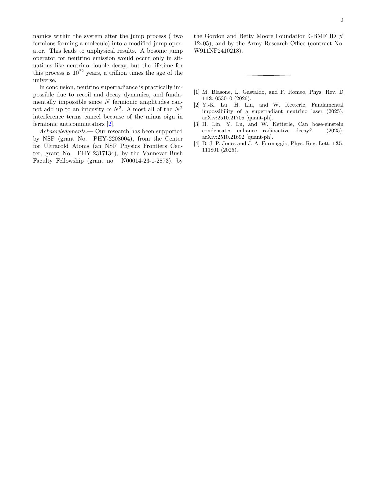
<figcaption class="paper-figure-caption"><b>Fig 1.</b> Low-resolution page preview, page 2</figcaption>
</figure>
</div>

<p><strong>Summary.</strong> This theoretical paper proves that superradiant neutrino emission from atomic condensates is fundamentally impossible. The authors demonstrate that fermionic anticommutators cause destructive interference, preventing the emission rate from scaling as $N^2$. This result places a strict theoretical limit on collective decay processes in quantum gases.</p>
<p><strong>Why it may be interesting.</strong> It provides a rigorous theoretical constraint on collective emission processes in ultracold atomic systems, specifically ruling out superradiant enhancement in neutrino emission, which is crucial for understanding decay dynamics in BECs.</p>
<details>
<summary>Detailed structure</summary>
<p><strong>Main problem.</strong> The paper addresses the theoretical proposal of superradiant neutrino emission from atomic Bose-Einstein condensates (BECs).</p>
<p><strong>Main result.</strong> The authors prove that superradiant neutrino emission is fundamentally impossible due to the nature of fermionic anticommutators, which cause interference terms to cancel.</p>
<p><strong>Method.</strong> The analysis involves deriving fundamental limits on the emission rate using quantum mechanical operators (jump operators) and analyzing the scaling of the emission rate with the number of particles, N.</p>
<p><strong>Model / system.</strong> The system under study is neutrino emission from atomic BECs, considering various models including bosonic-bosonic, bosonic-fermionic, and fermionic-to-bosonic transitions.</p>
<p><strong>Key observables.</strong> Neutrino emission rate, superradiant enhancement factor, and the scaling of the emission rate with particle number (N).</p>
<p><strong>Important parameters / regimes.</strong> The rate is found to scale as $\propto N$ rather than the superradiant $\propto N^2$, and kinetic effects suppress any enhancement by factors like $10^{17}$.</p>
<p><strong>Assumptions / limitations.</strong> The analysis assumes the fundamental fermionic nature of the amplitudes and accounts for the rapid decay and recoil of reaction products.</p>
<p><strong>Paper structure.</strong> The paper systematically critiques the models proposed in the cited work [1] (electron capture, bosonic-bosonic, etc.), demonstrating flaws in the underlying physics or mathematical formalism for each case.</p>
</details>
<details>
<summary>Abstract</summary>
<p>We show that the recent proposal for superradiant emission of neutrinos cannot evade our proof that superradiant neutrino emission is fundamentally impossible. Pairing two fermions in a molecule does not remove the cancellation of interference terms in neutrino emission due to fermionic anticommutators.</p>
</details>
<p><sub><a href="#top">↑ back to top</a></sub></p>

<p><a id="paper-2606.04926"></a></p>
<h3 id="adiabatic-ramp-dynamics-across-the-eth-mbl-transition-in-disordered-xxz-spin-chain"><a href="http://arxiv.org/abs/2606.04926v1">Adiabatic Ramp Dynamics Across the ETH--MBL Transition in Disordered XXZ Spin Chain</a></h3>
<p><strong>Authors:</strong> Nidhi Kumari, Vinod Ashokan<br>
<strong>Type:</strong> theory · <strong>Category:</strong> statistical mechanics · <strong>PDF:</strong> <a href="https://arxiv.org/pdf/2606.04926v1">https://arxiv.org/pdf/2606.04926v1</a><br>
<strong>Analysis basis:</strong> full PDF text, analyzed in chunks
<strong>Topic relevance:</strong> 🔥 <code>entanglement &amp; information structure</code> <strong>4/5</strong> · <code>analog quantum simulation</code> <strong>3/5</strong> · <code>non-equilibrium dynamics</code> <strong>3/5</strong> · <code>non-equilibrium universality</code> <strong>3/5</strong> · <code>driven-dissipative phase transition</code> <strong>2/5</strong> · <code>exotic spin models in light-matter</code> <strong>1/5</strong> · <code>methods for driven-dissipative</code> <strong>1/5</strong> · <code>scars &amp; prethermalization</code> <strong>1/5</strong></p>
<div class="figure-strip-hint">↔ Scroll figures horizontally</div>
<div class="paper-figures-scroll">
<figure class="paper-figure-card">
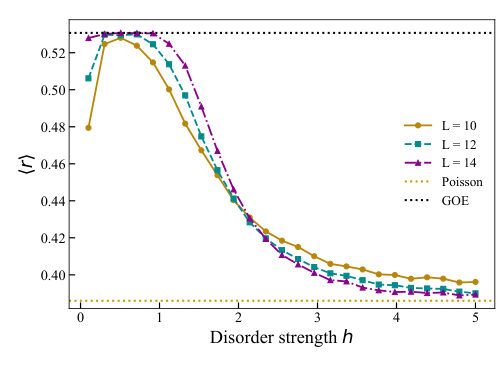
<figcaption class="paper-figure-caption"><b>Fig 1.</b> FIG. 1. Disorder-averaged adjacent-gap ratio r versus disor- der strength for system sizes L = 10, 12, and 14.</figcaption>
</figure>
<figure class="paper-figure-card">
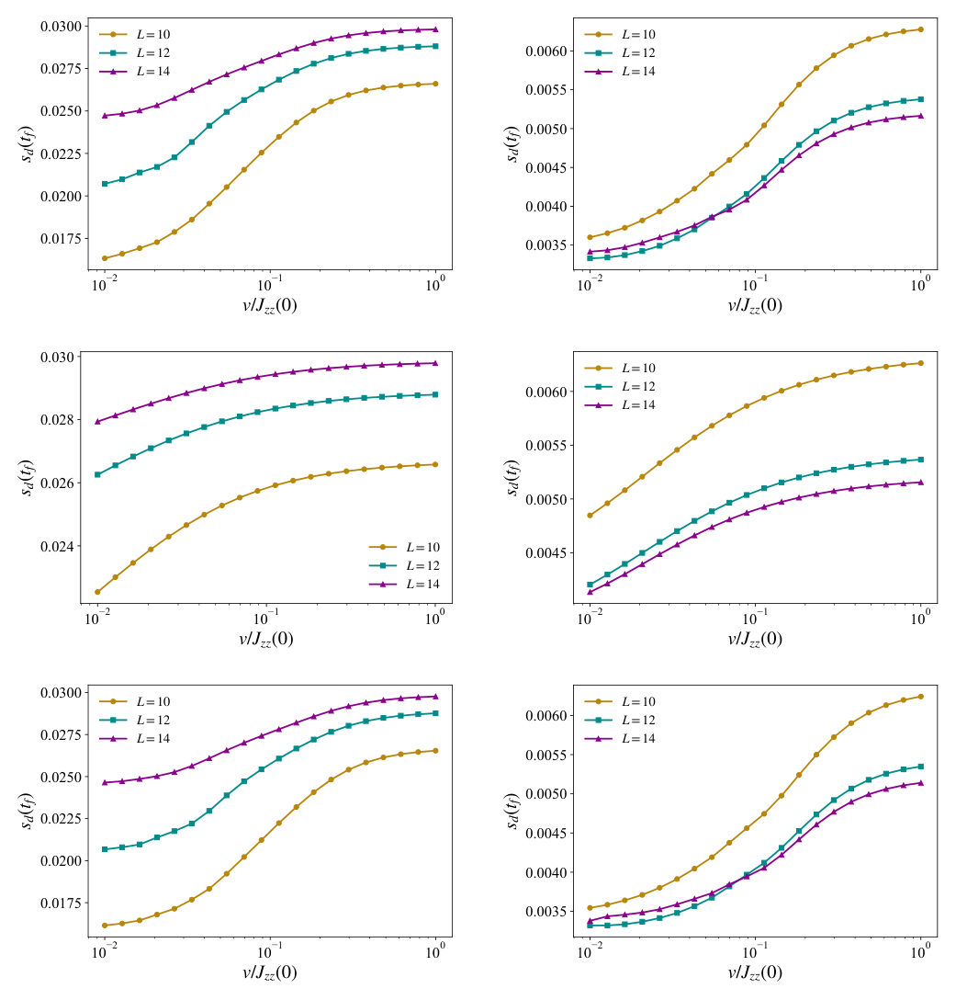
<figcaption class="paper-figure-caption"><b>Fig 2.</b> FIG. 2. Dependence of the diagonal entropy density, sd(tf), on the normalized ramp rate, v/Jzz(0), for the disordered XXZ spin chain. Panels in the left and right columns correspond to the ETH and MBL regimes, respectively. The rows represent linear, quadratic, and exponential ramp protocols from top to bottom. Results are shown for system sizes L = 10, 12, and 14 to illustrate finite-size dependence and the influence of different driving protocols on entropy generation during nonequilibrium dynamics.</figcaption>
</figure>
<figure class="paper-figure-card">
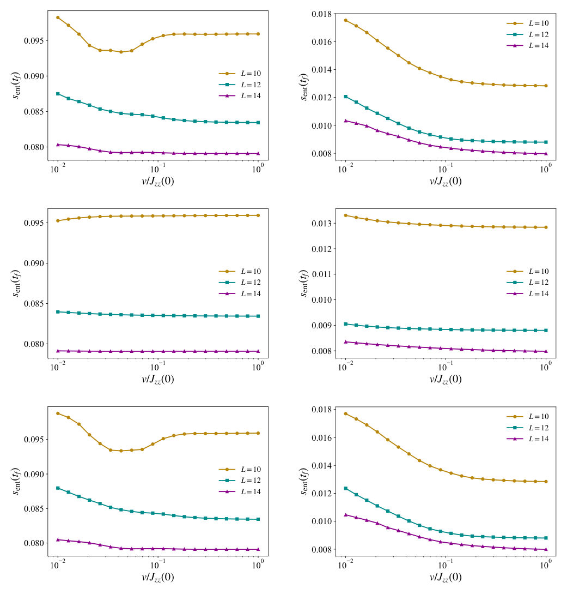
<figcaption class="paper-figure-caption"><b>Fig 3.</b> FIG. 3. Behavior of the entanglement entropy density, sent(tf), with normalized ramp rate, v/Jzz(0), in the disordered XXZ chain. Left and right columns show results in the ETH and MBL regimes, respectively, while the rows correspond to linear, quadratic, and exponential driving protocols. Data for system sizes L = 10, 12, and 14 are included to examine how system size and ramp protocol affect entanglement growth generation during nonequilibrium evolution.</figcaption>
</figure>
<figure class="paper-figure-card">
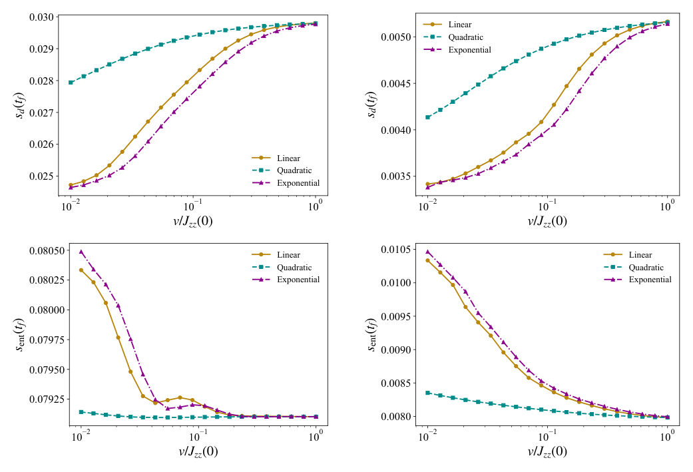
<figcaption class="paper-figure-caption"><b>Fig 4.</b> FIG. 4. Diagonal entropy density sd(tf) and entanglement entropy density sent(tf) for ETH and MBL phase. Panel (a)-(c) for L = 10, L = 12 and L = 14.</figcaption>
</figure>
</div>

<p><strong>Summary.</strong> This work examines how non-equilibrium dynamics differ between ergodic (ETH) and Many-Body Localized (MBL) quantum phases in a disordered spin chain. By adiabatically ramping the system parameters, the authors use entropy measures to show that the rate of excitation generation is strongly suppressed in the localized phase compared to the thermalizing phase. This confirms that entropy production serves as a powerful diagnostic tool for probing quantum thermalization dynamics.</p>
<p><strong>Why it may be interesting.</strong> The use of entropy measures to diagnose non-equilibrium dynamics across a fundamental quantum phase transition (ETH-MBL) is highly relevant for understanding how quantum information spreads or is suppressed in interacting many-body systems.</p>
<details>
<summary>Detailed structure</summary>
<p><strong>Main problem.</strong> The study investigates non-equilibrium dynamics across the transition between ergodic (ETH) and Many-Body Localized (MBL) quantum phases.</p>
<p><strong>Main result.</strong> The entropy production (diagonal and entanglement) is significantly higher and more dependent on the driving rate in the ergodic phase compared to the MBL phase, confirming the dynamical distinction between the two regimes.</p>
<p><strong>Method.</strong> The authors employed exact diagonalization and real-time numerical evolution to simulate the system's time evolution under time-dependent Hamiltonian ramps.</p>
<p><strong>Model / system.</strong> The model is a disordered spin-1/2 XXZ chain, described by a Hamiltonian with disorder terms ($h_j$) and a time-dependent interaction coupling ($J_{zz}(t)$). The system is analyzed in the zero-magnetization sector.</p>
<p><strong>Key observables.</strong> Diagonal entropy density, entanglement entropy density, and the adjacent-gap ratio (used to characterize static spectral statistics).</p>
<p><strong>Important parameters / regimes.</strong> Disorder strength ($h_0$), system size ($L \le 14$), and the ramp speed ($v$) characterizing the adiabaticity of the time-dependent drive.</p>
<p><strong>Assumptions / limitations.</strong> The analysis is limited by finite-size effects, though the results show robustness across multiple system sizes. The study assumes the validity of the ETH/MBL framework for characterizing thermalization.</p>
<p><strong>Figures summary.</strong> Figures illustrate the disorder-averaged adjacent-gap ratio transitioning from GOE (ergodic) to Poisson (localized) statistics, and show entropy measures ($   ext{sd},    ext{sent}$) varying with ramp speed for different protocols.</p>
<p><strong>Paper structure.</strong> The paper first establishes the static ETH-MBL crossover using spectral statistics. It then analyzes the non-equilibrium dynamics by applying three different time-dependent driving protocols (linear, quadratic, exponential) and comparing the resulting entropy growth in the ergodic versus localized regimes.</p>
</details>
<details>
<summary>Abstract</summary>
<p>Many-body localization(MBL) provides a mechanism by which isolated interacting quantum systems with disorder can avoid thermalization unlike ergodic systems satisfying the eigenstate thermalization hypothesis(ETH). Many-body localized systems retain signatures of their initial conditions at long times, whereas systems obeying ETH lose such information as they approach thermal equilibrium. Studying Non-equilibrium dynamics across ETH-MBL crossover is an important problem in condensed matter physics. Adiabatic control of parameters in interacting disordered systems provides a powerful framework to investigate MBL phases and their dynamical robustness. Using exact diagonalization and time-dependent numerical methods we study the effects of adiabatically ramped interactions in a disordered spin-1/2 XXZ chain, a paradigmatic model for exploring the many-body localization transition. By monitoring diagonal entropy density and entanglement entropy density growth across various ramp speeds, and system sizes. Our study incorporates Finite-size effects of spectral observables to probe the transition between ergodic and localized phases. The numerical results show that localized dynamical behavior remains largely intact under sufficiently slow ramp evolution, while increasing the driving rate promotes stronger excitation generation and larger entropy growth. This trend highlights the strong dependence of nonequilibrium adiabatic dynamics in disordered interacting quantum many-body systems.</p>
</details>
<p><sub><a href="#top">↑ back to top</a></sub></p>

<p><a id="paper-2606.05033"></a></p>
<h3 id="crossover-from-rabi-oscillations-to-adiabatic-population-switching-in-the-faraday-optical-control-of-quantum-dot-spins"><a href="http://arxiv.org/abs/2606.05033v1">Crossover from Rabi oscillations to adiabatic population switching in the Faraday optical control of quantum dot spins</a></h3>
<p><strong>Authors:</strong> Jan M. Kaspari, Zhe Xian Koong, Dorian A. Gangloff, Michał Gawełczyk, Doris E. Reiter<br>
<strong>Type:</strong> theory · <strong>Category:</strong> quantum information and computing · <strong>PDF:</strong> <a href="https://arxiv.org/pdf/2606.05033v1">https://arxiv.org/pdf/2606.05033v1</a><br>
<strong>Analysis basis:</strong> full PDF text, analyzed in chunks
<strong>Topic relevance:</strong> 🔥 <code>spintronics-quantum-optics interface</code> <strong>4/5</strong> · <code>exotic spin models in light-matter</code> <strong>3/5</strong> · <code>driven-dissipative phase transition</code> <strong>2/5</strong> · <code>methods for driven-dissipative</code> <strong>2/5</strong> · <code>non-equilibrium dynamics</code> <strong>2/5</strong> · <code>Keldysh / 2PI / non-Gaussian methods</code> <strong>1/5</strong> · <code>analog quantum simulation</code> <strong>1/5</strong> · <code>interference shaping light</code> <strong>1/5</strong> · <code>non-equilibrium universality</code> <strong>1/5</strong></p>
<div class="figure-strip-hint">↔ Scroll figures horizontally</div>
<div class="paper-figures-scroll">
<figure class="paper-figure-card">
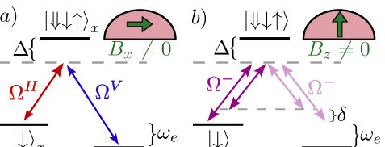
<figcaption class="paper-figure-caption"><b>Fig 1.</b> FIG. 1. Energy level diagrams of the spin system in a) Voigt geometry and b) in Faraday geometry, including the spin states and the optical transitions indicated by arrows.</figcaption>
</figure>
<figure class="paper-figure-card">
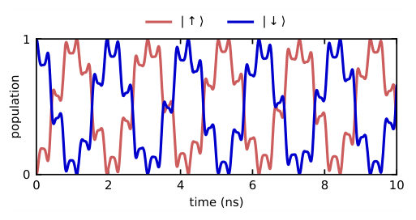
<figcaption class="paper-figure-caption"><b>Fig 2.</b> FIG. 3. Population dynamics of spin states for 𝑛= 1 in the balanced case 𝜂= 1 with Ω = 23.87 GHz and ℏ𝛿= 10.75 µeV (2.6 GHz).</figcaption>
</figure>
<figure class="paper-figure-card">
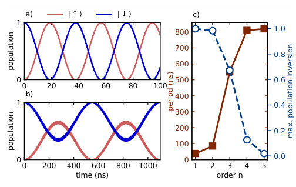
<figcaption class="paper-figure-caption"><b>Fig 3.</b> FIG. 2. Population dynamics of the spin states for Ω = 23.87 GHz for a) 𝑛= 1 with ℏ𝛿= 8.79 µeV (2.13 GHz) and b) 𝑛= 3 with ℏ𝛿= 2.93 µeV (0.71 GHz). c) Period of the oscillations (red) and the maximal achievable population inversion (blue) for orders 𝑛= 1, . . . , 5. The lines are just a guide to the eye.</figcaption>
</figure>
<figure class="paper-figure-card">
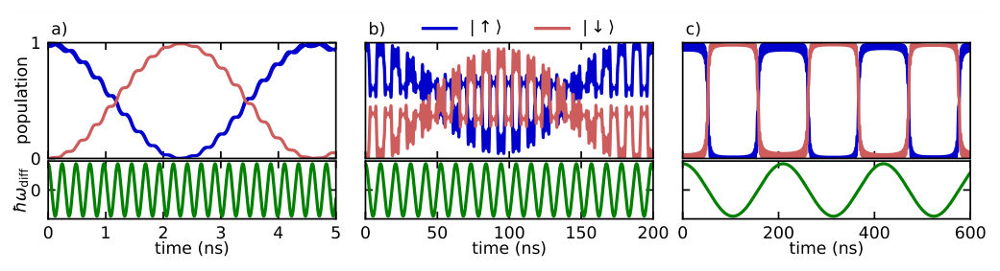
<figcaption class="paper-figure-caption"><b>Fig 4.</b> FIG. 4. Population dynamics of spin states (top panels) and instantaneous diabatic energy difference ℏ𝜔diff (bottom) for 𝑛= 0 at a) diabatic limit: ℏ𝛿= 17.11 µeV (4.14 GHz), b) intermediate step-like dynamics: ℏ𝛿= 0.39 µeV (0.10 GHz), and c) adiabatic limit: ℏ𝛿= 19.75 neV (4.77 MHz).</figcaption>
</figure>
</div>

<p><strong>Summary.</strong> This paper explores how to control spin dynamics in quantum dot qubits using optical fields in Faraday geometry. The authors demonstrate a novel mechanism where changing the laser detuning beatnote allows a controlled crossover from standard Rabi oscillations to highly efficient, step-like adiabatic population switching. This establishes the oscillating Stark shift as a powerful tool for engineering spin resonance conditions.</p>
<p><strong>Why it may be interesting.</strong> This work provides a detailed theoretical framework for using time-dependent, engineered couplings (the oscillating Stark shift) to precisely control quantum state transfer in solid-state spin qubits, a key area for quantum computing.</p>
<details>
<summary>Detailed structure</summary>
<p><strong>Main problem.</strong> The paper investigates the controlled transition between Rabi-like coherent oscillations and adiabatic population switching when controlling quantum dot spins using Faraday geometry optical fields.</p>
<p><strong>Main result.</strong> By tuning the detuning beatnote, the system can be engineered to exhibit a controlled crossover from Rabi oscillations to step-like population inversion via Landau-Zener-Stückelberg interference.</p>
<p><strong>Method.</strong> The dynamics are analyzed by solving the Liouville-von Neumann equation for the density matrix, comparing results from the full three-level model with effective two-level spin models.</p>
<p><strong>Model / system.</strong> The system is a singly charged quantum dot spin coupled to negative trion states, modeled as a three-level $\Lambda$ system driven by Raman laser fields in Faraday geometry. The dynamics are governed by a time-dependent Hamiltonian.</p>
<p><strong>Key observables.</strong> Population dynamics of spin states, coherent rotations, population inversion, and the differential AC Stark shift.</p>
<p><strong>Important parameters / regimes.</strong> Detuning beatnote ($\delta$), imbalance ($\eta$), detuning ($\Delta$), and Zeeman splitting ($\omega_e$).</p>
<p><strong>Assumptions / limitations.</strong> The analysis relies on the dipole and rotating wave approximations, and the effective model assumes $\Delta \gg \Omega$.</p>
<p><strong>Figures summary.</strong> Figures illustrate energy level diagrams comparing Voigt and Faraday geometries, and show population dynamics for different harmonic orders ($n=1, 3$) and the $n=0$ case, demonstrating the crossover.</p>
<p><strong>Paper structure.</strong> The paper progresses from establishing the physical setup and Hamiltonian to deriving effective models, analyzing resonance conditions for different harmonic orders ($n$), and finally demonstrating the controlled crossover from Rabi to adiabatic switching in the $n=0$ case.</p>
</details>
<details>
<summary>Abstract</summary>
<p>Stimulated Raman transitions in Faraday geometry allow for simultaneous single-shot qubit readout and qubit control. It involves driving an unbalanced $Λ$ system via an auxiliary excited state. Due to the simultaneous driving of both transitions with unequal detuning, the resulting time-dependent Stark shift gives rise to additional resonance conditions beyond the conventional picture. We identify a distinct regime in which repeated passages through avoided crossings lead to step-like population inversion arising from Landau-Zener-Stückelberg interference. By changing the detuning beatnote, we demonstrate a controlled continuous crossover from Rabi-like oscillations to adiabatic population switching. These findings establish the oscillating Stark shift as a mechanism for engineering and controlling spin dynamics in Faraday geometry.</p>
</details>
<p><sub><a href="#top">↑ back to top</a></sub></p>

<p><a id="paper-2606.04674"></a></p>
<h3 id="hydrodynamics-of-the-fermi-pasta-ulam-tsingou-chain"><a href="http://arxiv.org/abs/2606.04674v1">Hydrodynamics of the Fermi-Pasta-Ulam-Tsingou chain</a></h3>
<p><strong>Authors:</strong> Shubhadeep Chakraborty, Abhishek Dhar<br>
<strong>Type:</strong> theory · <strong>Category:</strong> statistical mechanics · <strong>PDF:</strong> <a href="https://arxiv.org/pdf/2606.04674v1">https://arxiv.org/pdf/2606.04674v1</a><br>
<strong>Analysis basis:</strong> full PDF text, analyzed in chunks
<strong>Topic relevance:</strong> 🔥 <code>non-equilibrium dynamics</code> <strong>4/5</strong> · <code>Frenkel-Kontorova</code> <strong>3/5</strong> · <code>non-equilibrium universality</code> <strong>3/5</strong> · <code>Keldysh / 2PI / non-Gaussian methods</code> <strong>2/5</strong> · <code>methods for driven-dissipative</code> <strong>2/5</strong> · <code>correlated / nonlocal dissipation</code> <strong>1/5</strong> · <code>driven-dissipative phase transition</code> <strong>1/5</strong> · <code>scars &amp; prethermalization</code> <strong>1/5</strong></p>
<div class="figure-strip-hint">↔ Scroll figures horizontally</div>
<div class="paper-figures-scroll">
<figure class="paper-figure-card">
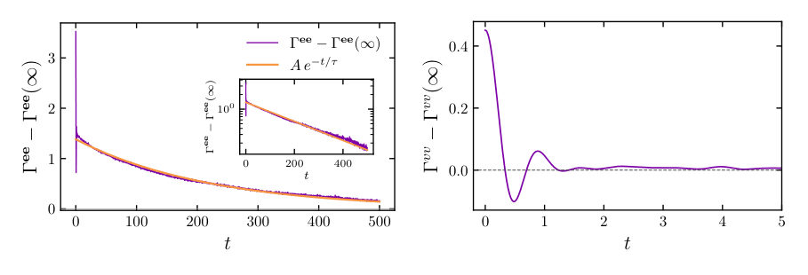
<figcaption class="paper-figure-caption"><b>Fig 1.</b> Fig. 1: Current-correlators with the theoretical Drude weight values subtracted for N = 1000, β = 1, P = 2, v = 0. Left: Γ ee(t) −Γ ee(∞) (purple) with exponential fit (orange); inset shows the same on a semilog scale. Right: Γ vv(t) −Γ vv(∞).</figcaption>
</figure>
<figure class="paper-figure-card">
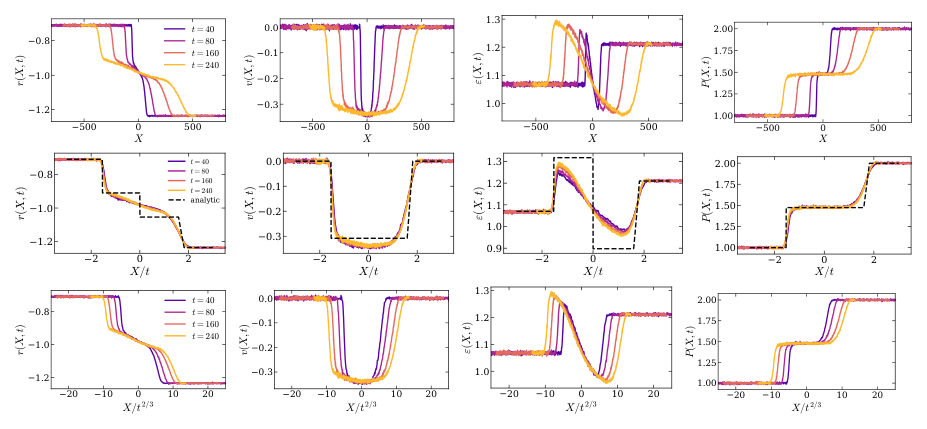
<figcaption class="paper-figure-caption"><b>Fig 2.</b> Fig. 2: Comparison of the Euler solution and microscopic simulations for an unequal-pressure domain wall. The initial states are uL = (rL,0,eL) and uR = (rR,0,eR), with PL ≠PR. The top panel shows the unscaled plots while the middle panel shows the same data with ballistic scaling. In the middle panel, the colored lines show ensemble averaged microscopic data plotted against the similarity variable X/t, while the solid lines show the Euler prediction obtained from the Riemann solution construction. The lower panel shows X/t2/3 scaling and we see somewhat better data collapse near the centre. The plots here are constructed after averaging 5 × 104 samples with βL = 1, βR = 2, PL = 1 and PR =...</figcaption>
</figure>
<figure class="paper-figure-card">

<figcaption class="paper-figure-caption"><b>Fig 3.</b> Fig. 2 shows the evolution of the hydrodynamic fields with time and the comparison with Euler</figcaption>
</figure>
<figure class="paper-figure-card">
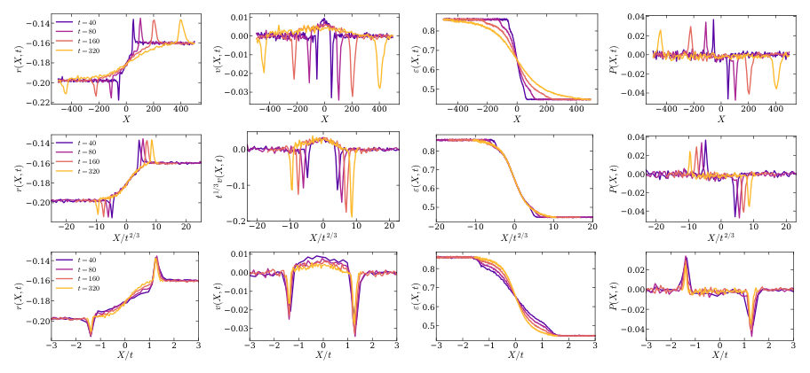
<figcaption class="paper-figure-caption"><b>Fig 4.</b> Fig. 3: Evolution of an equal-pressure domain wall with βL = 1, βR = 2, P = 0 and v = 0, with 105 samples averaged. The top panel shows the unscaled plots and the middle panel shows that the best collapse for the central regions is by X/t2/3. There are moving spikes in the profiles that scale ballistically as shown in the bottom panel.</figcaption>
</figure>
<figure class="paper-figure-card">
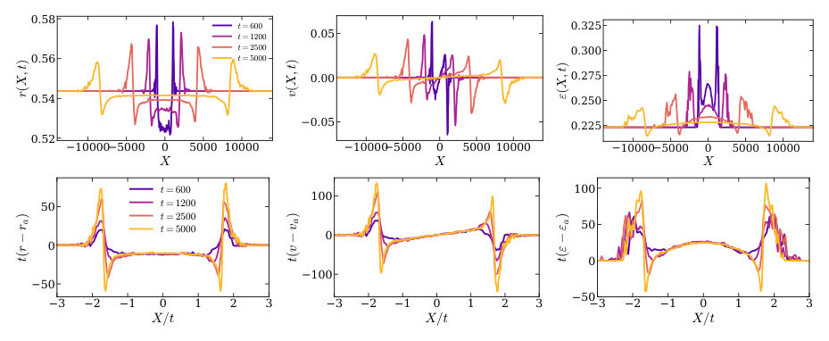
<figcaption class="paper-figure-caption"><b>Fig 5.</b> Fig. 4: Case A: Blast initial condition with Pa ≠0, ra ≠0, ca ≠0 and (k2,k3,k4) = (1,1,1). The top panel shows the time evolution of the profiles while the bottom panel shows results after a ballistic collapse.</figcaption>
</figure>
</div>

<p><strong>Summary.</strong> This paper provides a comprehensive review of applying hydrodynamic theory to the FPUT chain, deriving both Euler and dissipative equations. It tests these theories against non-equilibrium initial conditions like domain walls and blast waves. The findings demonstrate that while hydrodynamics works well for some regimes, dissipation and noise are essential for accurately describing the system's far-from-equilibrium evolution.</p>
<p><strong>Why it may be interesting.</strong> The study provides a rigorous test case for the crossover between microscopic Hamiltonian dynamics and continuum fluid descriptions, which is a central theme in non-equilibrium statistical mechanics.</p>
<details>
<summary>Detailed structure</summary>
<p><strong>Main problem.</strong> The paper reviews the applicability and derivation of hydrodynamic descriptions for the Fermi-Pasta-Ulam-Tsingou (FPUT) chain, especially when analyzing far-from-equilibrium phenomena.</p>
<p><strong>Main result.</strong> While the hydrodynamic approach successfully recovers equilibrium transport coefficients like the diffusion matrix, simulations show that for certain non-equilibrium states (like equal-pressure domain walls), deviations from Euler predictions highlight the crucial role of dissipation and noise.</p>
<p><strong>Method.</strong> The authors employ a combination of theoretical derivations (Green-Kubo type methods, characteristic analysis of Euler equations) and comparison with molecular dynamics simulations.</p>
<p><strong>Model / system.</strong> The system is the FPUT chain, modeled by particles interacting via a nonlinear potential $V(r) = k_2/r^2 + k_3/r^3 + k_4/r^4$. The analysis transitions between microscopic Hamiltonian dynamics and macroscopic continuum fluid descriptions.</p>
<p><strong>Key observables.</strong> Mass density ($
ho$), momentum density, energy density, current-current correlators ($\Gamma_{\alphaeta}(t)$), and wave structures (shocks, rarefactions).</p>
<p><strong>Important parameters / regimes.</strong> The degree of nonlinearity in the potential, the ambient pressure ($P_a$), and the scaling exponents (e.g., $t^{2/3}$).</p>
<p><strong>Assumptions / limitations.</strong> The primary assumption is the validity of local equilibrium for deriving the hydrodynamic equations, which is tested against non-equilibrium initial conditions.</p>
<p><strong>Figures summary.</strong> Figures compare the theoretical three-wave structure predicted by Euler theory against microscopic simulations for domain walls, and show the collapse of central regions for blast waves, contrasting with the expected TvNS scaling.</p>
<p><strong>Paper structure.</strong> The paper progresses by first defining the Hamiltonian, then deriving the full set of hydrodynamic equations (Euler and NSF), followed by applying these equations to solve specific non-equilibrium problems like domain walls and blast waves.</p>
</details>
<details>
<summary>Abstract</summary>
<p>We provide a pedagogical review of the hydrodynamics of the FPUT chain. There are three hydrodynamic fields corresponding to the conservation of mass, momentum and energy. We provide physically motivated derivations of the hydrodynamic equations at the levels of Euler and then Navier-Stokes-Fourier. Next we consider examples to test as to how successful the hydrodynamic description is in predicting the observed time evolution of nonequilibrium initial conditions such as domain walls and blasts. We find that in some cases there is good agreement of microscopic simulations with predictions from the Euler equations while, in several other cases, there is significant departure from the Euler predictions suggesting that the role of dissipation and noise is important in general.</p>
</details>
<p><sub><a href="#top">↑ back to top</a></sub></p>

<p><a id="paper-2606.04794"></a></p>
<h3 id="monitored-chaotic-scattering"><a href="http://arxiv.org/abs/2606.04794v1">Monitored chaotic scattering</a></h3>
<p><strong>Authors:</strong> C. W. J. Beenakker, J. Sánchez Fernán, J. Tworzydło<br>
<strong>Type:</strong> theory · <strong>Category:</strong> other · <strong>PDF:</strong> <a href="https://arxiv.org/pdf/2606.04794v1">https://arxiv.org/pdf/2606.04794v1</a><br>
<strong>Analysis basis:</strong> full PDF text, analyzed in chunks
<strong>Topic relevance:</strong> 🔥 <code>measurement-induced transitions</code> <strong>4/5</strong> · <code>quantum measurements</code> <strong>3/5</strong> · <code>methods for driven-dissipative</code> <strong>2/5</strong> · <code>non-equilibrium dynamics</code> <strong>2/5</strong> · <code>Keldysh / 2PI / non-Gaussian methods</code> <strong>1/5</strong> · <code>correlated / nonlocal dissipation</code> <strong>1/5</strong> · <code>driven-dissipative phase transition</code> <strong>1/5</strong> · <code>non-equilibrium universality</code> <strong>1/5</strong></p>
<div class="figure-strip-hint">↔ Scroll figures horizontally</div>
<div class="paper-figures-scroll">
<figure class="paper-figure-card">
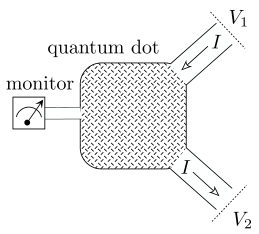
<figcaption class="paper-figure-caption"><b>Fig 1.</b> FIG. 2. Two-terminal transport configuration in a quantum dot. A voltage difference V = V1 −V2 between contacts 1 and 2 drives a current I through the system, corresponding to a differential conductance G = dI/dV . We seek the effect on G of a monitoring of the scattering dynamics. The monitoring breaks reciprocity, leading to a difference between the case of an asymmetric bias V1 = V , V2 = 0 and the case of a symmetric bias V1 = V/2, V2 = −V/2.</figcaption>
</figure>
<figure class="paper-figure-card">
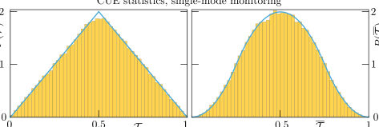
<figcaption class="paper-figure-caption"><b>Fig 2.</b> FIG. 3. Charge transfer statistics for single-mode monitoring. The two panels show the probability density functions of the transferred charge T (from mode 1 to mode 2) and T (the average of the charge transfer from mode 1 to mode 2 and from mode 2 to mode 1). The histograms are computed numerically from the master equation (5.1) for M = 100, the solid curves are derived from the CUE in the limit M →∞, assuming Eq. (5.5).</figcaption>
</figure>
<figure class="paper-figure-card">
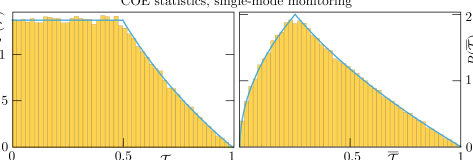
<figcaption class="paper-figure-caption"><b>Fig 3.</b> FIG. 4. Same as Fig. 3, but for unitary symmetric S drawn from the COE.</figcaption>
</figure>
<figure class="paper-figure-card">
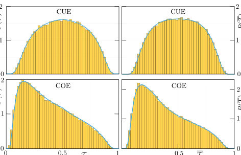
<figcaption class="paper-figure-caption"><b>Fig 4.</b> FIG. 5. Charge transfer statistics for multi-mode monitor- ing. The panels show the probability density functions of the transferred charge T and T , for CUE and COE statis- tics of the scattering matrix. The histograms are computed numerically from the master equation (4.5) for M = 100, w = 0.1 ⇒γ = Mw2 = 1, the solid curves are the RMT calculations based on Eq. (6.2).</figcaption>
</figure>
<figure class="paper-figure-card">
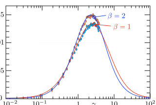
<figcaption class="paper-figure-caption"><b>Fig 5.</b> FIG. 6. Reciprocity breaking by monitoring, quantified through the mean squared difference ∆2 β of the transferred charge from contact 1 to contact 2 and the other way around. The solid curves are the RMT results (6.4). The data points are computed numerically from the master equation (4.5) as a function of γ = Mw2, by varying M at fixed w = 0.1. (Only the range γ ≲4 was accessible numerically.)</figcaption>
</figure>
</div>

<p><strong>Summary.</strong> This paper develops a theoretical framework to study quantum transport in chaotic scattering systems when the system is continuously monitored by an external measurement. It derives a quantum master equation governing the evolution and uses Random Matrix Theory to predict the statistics of the transferred charge. The key finding is that monitoring breaks transport reciprocity, providing new diagnostics for open quantum systems.</p>
<p><strong>Why it may be interesting.</strong> This work is highly relevant to AMO and open quantum systems as it provides a rigorous theoretical framework for analyzing non-unitary, measurement-induced dynamics in mesoscopic conductors, extending concepts from quantum chaos to open quantum systems.</p>
<details>
<summary>Detailed structure</summary>
<p><strong>Main problem.</strong> The paper extends random-matrix theory to analyze quantum transport through chaotic scattering systems when the dynamics are subjected to continuous, time-resolved monitoring.</p>
<p><strong>Main result.</strong> Monitoring breaks the reciprocity of transport measurements, and the resulting charge transfer statistics can be predicted by comparing numerical solutions of a quantum master equation against Random Matrix Theory conjectures.</p>
<p><strong>Method.</strong> The analysis involves deriving and solving a discrete-time quantum master equation for the density matrix, followed by applying Random Matrix Theory techniques (CUE/COE ensembles) to calculate probability distributions for transferred charge.</p>
<p><strong>Model / system.</strong> The model is a quantum dot coupled to leads, where the system's evolution is governed by a quantum channel defined by Kraus operators due to the monitoring process. The scattering is statistically modeled using the Circular Unitary Ensemble (CUE).</p>
<p><strong>Key observables.</strong> Transferred charge ($T$), differential conductance ($G = dI/dV$), and the probability density functions $P(T)$ and $P(T')$.</p>
<p><strong>Important parameters / regimes.</strong> Weak measurement strength ($w_m$), the ratio of lead modes ($M$ vs $N$), and the fixed parameter $\gamma = Mw^2$ in the multi-mode limit.</p>
<p><strong>Assumptions / limitations.</strong> The analysis assumes a weak measurement strength and relies on conjectures like the 'equipartition rule' for RMT predictions.</p>
<p><strong>Figures summary.</strong> Figures illustrate the setup (open/closed leads), two-terminal transport configurations, and the probability density functions $P(T)$ and $P(T')$ for both single-mode and multi-mode monitoring under CUE and COE statistics.</p>
<p><strong>Paper structure.</strong> The paper progresses from defining the monitored evolution via Kraus operators to deriving the master equation. It then compares numerical solutions for charge transfer statistics ($T$) against predictions from Random Matrix Theory, culminating in generalized equipartition rules for multi-mode monitoring.</p>
</details>
<details>
<summary>Abstract</summary>
<p>We extend the random-matrix theory of chaotic scattering to quantum dots whose dynamics is monitored by time-resolved measurements. Starting from a scattering matrix drawn from a circular ensemble, we construct the corresponding ensemble of Kraus operators for the monitored evolution of the many-body density matrix. In the single-particle sector the sum over measurement outcomes can be carried out algebraically, giving a discrete-time quantum master equation for the transferred charge. We solve this equation numerically and compare the resulting charge-transfer statistics with closed-form random-matrix predictions. The latter rely on an equipartition rule for monitored particles, which we formulate as a conjecture and test against the master equation.</p>
</details>
<p><sub><a href="#top">↑ back to top</a></sub></p>

<p><a id="paper-2606.05125"></a></p>
<h3 id="experimentally-probing-the-quantum-physics-in-the-inverted-harmonic-oscillator"><a href="http://arxiv.org/abs/2606.05125v1">Experimentally probing the Quantum Physics in the Inverted Harmonic Oscillator</a></h3>
<p><strong>Authors:</strong> Si-Cong Ji, Philipp Schüttelkopf, Nataliia Bazhan, Federica Cataldini, Mohammadamin Tajik, Frederik S. Møller, Igor Mazets, Sebastian Erne, Jörg Schmiedmayer<br>
<strong>Type:</strong> experiment · <strong>Category:</strong> quantum gases · <strong>PDF:</strong> <a href="https://arxiv.org/pdf/2606.05125v1">https://arxiv.org/pdf/2606.05125v1</a><br>
<strong>Analysis basis:</strong> full PDF text, analyzed in chunks
<strong>Topic relevance:</strong> 🔥 <code>analog quantum simulation</code> <strong>4/5</strong> · <code>non-equilibrium dynamics</code> <strong>3/5</strong> · <code>entanglement &amp; information structure</code> <strong>2/5</strong> · <code>driven-dissipative phase transition</code> <strong>1/5</strong> · <code>interference shaping light</code> <strong>1/5</strong> · <code>non-equilibrium universality</code> <strong>1/5</strong> · <code>quantum measurements</code> <strong>1/5</strong> · <code>quantum optics experiment</code> <strong>1/5</strong></p>
<div class="figure-strip-hint">↔ Scroll figures horizontally</div>
<div class="paper-figures-scroll">
<figure class="paper-figure-card">
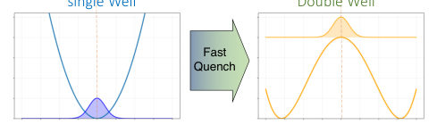
<figcaption class="paper-figure-caption"><b>Fig 1.</b> FIG. 1. Preparation of the IHO initial condition. The RF quench transforms the transverse harmonic confinement into a double-well potential whose central barrier is locally ap- proximated by an inverted harmonic oscillator. The atoms are initially localized at the former trap minimum, which co- incides with the unstable fixed point of the IHO.</figcaption>
</figure>
<figure class="paper-figure-card">
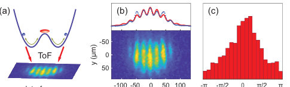
<figcaption class="paper-figure-caption"><b>Fig 2.</b> FIG. 3. Coherent expansion probed by matter-wave in- terference. (a) The BEC expands in the inverted harmonic potential from the top of the barrier into the double well. The split cloud is released close to the far turning point. The wave functions expand and overlap in time-of-flight (ToF). (b) Interference pattern of the two daughter clouds split by the barrier after a 5.5 ms hold, integrated along the longitu- dinal (z) direction. (c) Distribution of the phase φ extracted from the fringes. The fringe contrast C = 0.24(0.04), together with the pronounced peak in φ rather than a uniform distri- bution, demonstrate that phase coherence between the two copies survives the full inflation.</figcaption>
</figure>
<figure class="paper-figure-card">
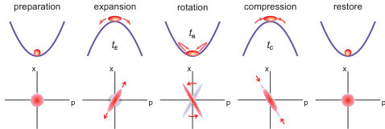
<figcaption class="paper-figure-caption"><b>Fig 3.</b> FIG. 2. (a) Time sequence of the coherent expansion. (b) Time sequence for restoring the initial coherent state. For both figures, the upper panel shows the potential at differ- ent stages of the experiment, while the lower panel shows the corresponding phase-space distributions. The dark (light) red ellipses represent the Wigner distribution at the end (begin- ning) of each stage.</figcaption>
</figure>
<figure class="paper-figure-card">
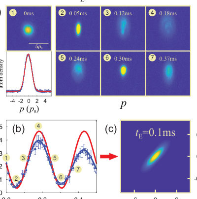
<figcaption class="paper-figure-caption"><b>Fig 4.</b> FIG. 4. (a) Momentum distributions at different tomogra- phy times for the expanded state with tE = 0.1 ms. Lower- left panel: after ToF the atomic density is integrated along y, and the momentum distribution along the expanded direc- tion is fitted (red line) to extract its width and variance. (b) Evolution of the momentum variance, fitted with a damped- oscillation model (blue line); the red line is the corresponding undamped oscillation. The numbers mark the time points in panel (a). (c) Wigner distribution reconstructed from (b) by inverse-Radon transformation, for tE = 0.1 ms.</figcaption>
</figure>
<figure class="paper-figure-card">
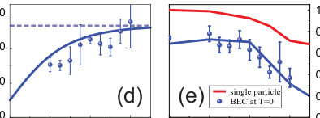
<figcaption class="paper-figure-caption"><b>Fig 5.</b> FIG. 5. (a) Wigner distributions of the expanded states reconstructed by inverse-Radon transformation for varying expansion times. (b) Momentum (blue) and position (red) variances of the expanded states versus expansion time. (c) Squeeze factor versus expansion time. (d) Orientation angle φ of the major axis of the Wigner ellipse versus expansion time tE. The asymptotic angle determined by ωI/ω⊥is shown by the dashed line. (e) Purity PG of the reconstructed Gaussian state versus expansion time. The reduced PG(0) ∼0.75 for the BEC results from interactions in the ground state; the ap- parent loss of purity with time, present even for a single par- ticle, is the result of the anharmonicity of...</figcaption>
</figure>
</div>

<p><strong>Summary.</strong> The researchers used a Bose-Einstein condensate on an AtomChip to simulate the dynamics of an Inverted Harmonic Oscillator (IHO), which models unstable quantum evolution. They measured sub-vacuum squeezing and confirmed that the quantum state retains coherence even after undergoing rapid, amplifying expansion. This work establishes ultra-cold atoms as a powerful tool for studying fundamental quantum phenomena relevant to cosmology and quantum sensing.</p>
<p><strong>Why it may be interesting.</strong> This work provides a highly controlled, many-body quantum simulator for fundamental processes like cosmological inflation, offering quantitative measurements of quantum noise amplification and coherence preservation in an ultracold atomic setting.</p>
<details>
<summary>Detailed structure</summary>
<p><strong>Main problem.</strong> The paper experimentally investigates the quantum dynamics governed by the Inverted Harmonic Oscillator (IHO), a model for unstable quantum evolution, using ultra-cold atoms.</p>
<p><strong>Main result.</strong> They successfully demonstrated sub-vacuum squeezing and confirmed the coherent reversibility of the IHO dynamics using a Bose-Einstein condensate, establishing a clean platform for studying quantum fluctuations.</p>
<p><strong>Method.</strong> The dynamics are probed using phase-space tomography on the Wigner function, and coherence is verified via matter-wave interference and time-reversal protocols.</p>
<p><strong>Model / system.</strong> The system is a Bose-Einstein condensate (BEC) trapped on an AtomChip, where the transverse confinement is dynamically quenched via RF dressing to approximate an IHO potential. The dynamics are analyzed using the Gross-Pitaevskii equation (GPE) in the many-body limit.</p>
<p><strong>Key observables.</strong> Sub-vacuum squeezing (up to 10.6 dB), Wigner function evolution, matter-wave interference contrast, and the decay/restoration of quantum purity.</p>
<p><strong>Important parameters / regimes.</strong> Effective IHO frequency ($\omega_I = 2\pi 	imes 0.9$ kHz), initial transverse confinement ($\omega_\perp = 2\pi 	imes 2.1$ kHz), and time-of-flight measurement times ($t_E$).</p>
<p><strong>Assumptions / limitations.</strong> The single-mode IHO description is assumed accurate for short times, though the experiment probes regimes where interaction-induced mode coupling becomes significant.</p>
<p><strong>Figures summary.</strong> Figures illustrate the experimental setup (RF quench), the time evolution sequence including time-reversal (loop protocol), and the resulting matter-wave interference patterns and momentum distributions used for tomography.</p>
<p><strong>Paper structure.</strong> The paper follows a structure of realizing the IHO potential via RF dressing, characterizing the resulting quantum state using Wigner tomography, demonstrating the exponential amplification and squeezing, and finally testing the coherence and reversibility via a time-reversal loop protocol.</p>
</details>
<details>
<summary>Abstract</summary>
<p>When a quantum system passes through an unstable fixed point the local dynamics reduces to the inverted harmonic oscillator (IHO). It exponentially amplifies along one quadrature while squeezing the other, producing macroscopically extended quantum states from microscopic zero-point fluctuations. We realize this dynamics with a Bose-Einstein condensate on an AtomChip. Radio-frequency dressing flips the transverse harmonic confinement into an IHO. Through phase-space tomography we follow the full Wigner function of the evolving quantum state, observe sub-vacuum squeezing of 10.6(1.3) dB, and test coherent reversibility by time-reversing the IHO evolution. Matter-wave interference between the two daughter clouds confirms quantum coherence over timescales far beyond the initial expansion. Our experiment establishes ultra-cold atoms as a clean, controlled, many-body platform for unstable quantum dynamics opening a route to force sensing with time-reversal-based coherence certification and to analog studies of the amplification of quantum fluctuations in inflationary field dynamics.</p>
</details>
<p><sub><a href="#top">↑ back to top</a></sub></p>

<p><a id="paper-2606.05010"></a></p>
<h3 id="measurement-induced-state-transitions-in-multi-qubit-transmon-processors"><a href="http://arxiv.org/abs/2606.05010v1">Measurement-induced state transitions in multi-qubit transmon processors</a></h3>
<p><strong>Authors:</strong> Baptiste Hoyau, Alexander McDonald, Boris M. Varbanov, Manuel H. Muñoz-Arias, Alexandre Blais<br>
<strong>Type:</strong> theory · <strong>Category:</strong> other · <strong>PDF:</strong> <a href="https://arxiv.org/pdf/2606.05010v1">https://arxiv.org/pdf/2606.05010v1</a><br>
<strong>Analysis basis:</strong> full PDF text, analyzed in chunks
<strong>Topic relevance:</strong> 🔥 <code>measurement-induced transitions</code> <strong>4/5</strong> · <code>quantum measurements</code> <strong>2/5</strong> · <code>QC/QI experiment</code> <strong>1/5</strong> · <code>analog quantum simulation</code> <strong>1/5</strong> · <code>correlated / nonlocal dissipation</code> <strong>1/5</strong> · <code>correlated cavity matter</code> <strong>1/5</strong> · <code>driven-dissipative phase transition</code> <strong>1/5</strong> · <code>methods for driven-dissipative</code> <strong>1/5</strong> · <code>non-equilibrium dynamics</code> <strong>1/5</strong></p>
<div class="figure-strip-hint">↔ Scroll figures horizontally</div>
<div class="paper-figures-scroll">
<figure class="paper-figure-card">
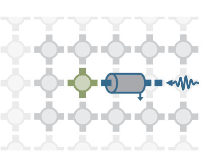
<figcaption class="paper-figure-caption"><b>Fig 1.</b> FIG. 1. Schematic of a QPU focusing on a qubit (green) ca- pacitively that is coupled to a driven readout resonator (blue) and to several spectator qubits (gray) that are themselves cou- pled to each other.</figcaption>
</figure>
<figure class="paper-figure-card">
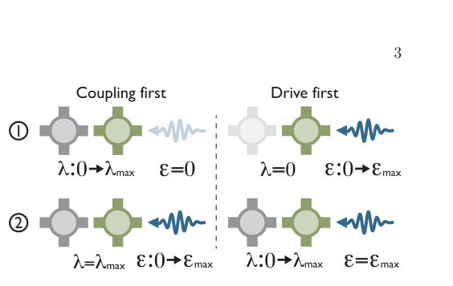
<figcaption class="paper-figure-caption"><b>Fig 2.</b> FIG. 2. Schematic of the two Floquet branch analysis meth- ods used to study the impact of a spectator mode (gray) on the MIST of a qubit (green) during dispersive readout: the coupling-first and the drive-first approaches. These two ap- proaches proceed in two steps (labeled 1○and 2○). As their names suggest, in the coupling-first (drive-first) approach the coupling λ (drive amplitude ϵ) is first adiabatically increased from 0 to its target value while the other parameter is held at zero. In a second step, that remaining parameter is then ramped up.</figcaption>
</figure>
<figure class="paper-figure-card">
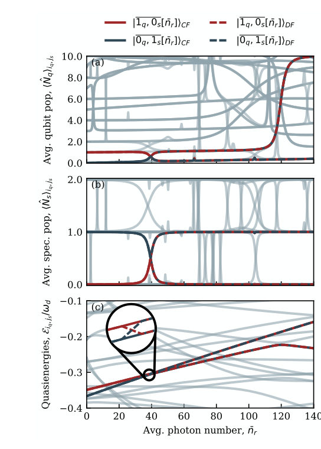
<figcaption class="paper-figure-caption"><b>Fig 3.</b> FIG. 3. Example of spectator-induced MIST. (a) Average qubit ⟨ˆ Nq⟩iq,js and (b) spectator ⟨ˆ Ns⟩iq,js population of the Floquet branches and (c) their corresponding quasieneriges as a function of the average resonator photon number ¯nr. The populations and quasienergies of the |1q, 0s[¯nr]⟩and |0q, 1s[¯nr]⟩branches are highlighted in red and blue, respec- tively. The branches are labeled using either the coupling- first (solid lines) or drive-first (dashed lines) Floquet branch analysis methods. In (c), the quasienergies are defined with respect to the ground state energy of the system and subse- quently folded into the interval [−ωd/2, ωd/2]. We observe a swapping of the average qubit and...</figcaption>
</figure>
<figure class="paper-figure-card">
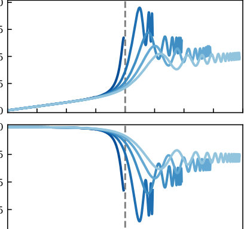
<figcaption class="paper-figure-caption"><b>Fig 4.</b> FIG. 4. The time evolution of the (a) average qubit and (b) spectator population as a function of the resonator mean photon number, with the system initialized in the state |Ψ(0)⟩= |0q, 1s⟩. The dynamics is computed for six values of the steady-state photon number ¯n∞ranging between 30 and 80 (see legend). The vertical dashed line indicates the critical photon number obtained via the multimode branch analysis method. The steady-state photon number n∞de- termines the speed of passage through the observed avoided crossing in the quasienergy spectrum at ¯nr ≈40 photons (ver- tical dashed line) that is associated with the observed branch population swapping (see Fig. 3). Larger n∞leads to a...</figcaption>
</figure>
<figure class="paper-figure-card">
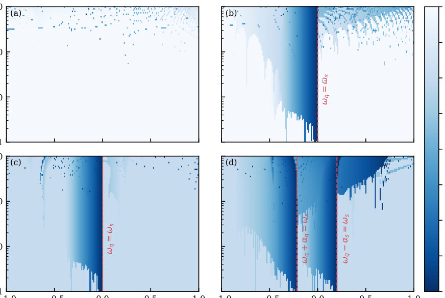
<figcaption class="paper-figure-caption"><b>Fig 5.</b> FIG. 5. Critical photon numbers for the four computational states of the qubit and spectator as a function of the detuning ∆qs = ωs −ωq and the coupling strength between the qubit and the spectator, at ng = 0. As discussed in the text, the critical photon numbers are extracted from both the average qubit and spectator populations. (a) |0q, 0s⟩. In the absence of a qubit or spectator excitation, the critical photon number is nearly uniform at ncrit = 158 and results from a multi-photon resonance between states |0q⟩and |14q⟩(see Sec. A). (b) |0q, 1s⟩. In the presence of a spectator excitation, the background remains at ncrit = 158 and results from the same resonance as in panel (a). The large...</figcaption>
</figure>
</div>

<p><strong>Summary.</strong> This paper develops a general theoretical framework to analyze Measurement-Induced State Transitions (MIST) in complex multi-qubit transmon processors. By comparing different adiabatic path traversals, the authors quantify how neighboring qubits and tunable couplers alter the critical photon number required for these detrimental transitions. This provides crucial guidelines for designing high-fidelity quantum readout protocols.</p>
<p><strong>Why it may be interesting.</strong> This work is highly relevant to AMO physics and open quantum systems as it tackles decoherence and leakage mechanisms (MIST) in superconducting circuits, which are central to building scalable quantum hardware.</p>
<details>
<summary>Detailed structure</summary>
<p><strong>Main problem.</strong> The paper investigates how Measurement-Induced State Transitions (MIST) affect transmon qubits when they are embedded within complex multi-qubit quantum processors.</p>
<p><strong>Main result.</strong> The presence of spectator qubits and tunable couplers significantly modifies the MIST threshold, sometimes leading to suppression or cancellation of these unwanted transitions.</p>
<p><strong>Method.</strong> The authors employ advanced Floquet branch analysis, comparing 'coupling-first' and 'drive-first' labeling schemes to detect discrepancies indicative of spectator-induced avoided crossings.</p>
<p><strong>Model / system.</strong> The system models multi-qubit transmon processors in circuit QED, involving a readout qubit, spectator qubits, and tunable couplers, described by a complex Hamiltonian.</p>
<p><strong>Key observables.</strong> Critical photon number ($n_{	ext{spec}}^{	ext{crit}}$), average qubit and spectator populations ($\langle\hat{N}_q
angle, \langle\hat{N}_s
angle$), and quasienergies.</p>
<p><strong>Important parameters / regimes.</strong> Measurement drive amplitude ($E_q$), detunings ($\Delta_{qs}$), and coupling strengths ($g_{qs}, J_{qc}$).</p>
<p><strong>Assumptions / limitations.</strong> The analysis relies on semi-classical approximations and the comparison between different adiabatic/diabatic path traversals (CF vs. DF labeling).</p>
<p><strong>Figures summary.</strong> Figures illustrate the comparison of average populations and quasienergies between coupling-first and drive-first paths, mapping $n_{	ext{spec}}^{	ext{crit}}$ as a function of detuning and coupling strength, and showing the effect of couplers on avoided crossings.</p>
<p><strong>Paper structure.</strong> The paper builds from single-qubit MIST analysis to a general method for multi-mode systems, then applies this method to study the specific effects of spectator qubits, and finally incorporates tunable couplers to analyze mitigation strategies.</p>
</details>
<details>
<summary>Abstract</summary>
<p>Dispersive readout of the transmon qubit in circuit QED is known to lose its quantum non-demolition character at small to moderate measurement drive amplitudes. This phenomenon is understood to originate from Laundau-Zener transitions at accidental multi-photon resonances, where $n$ drive photons can promote the transmon by $m$ levels. This interpretation has been shown to be in agreement with experiments characterizing the dispersive readout of a single transmon. The impact of these measurement-induced state transition (MIST) of a transmon embedded in a multi-qubit chip, however, remains largely unexplored. Here, we show that the presence of other components, such as qubits and couplers, can affect the MIST threshold of a measured transmon. To arrive at these results, we present a general method to characterize measurement-induced transition when the qubit under readout is coupled to other circuit elements, a ubiquitous situation in circuit QED-based quantum processors. As an example, we consider the case of two transmon qubits, and we show that the spectator qubit can be impacted by the measurement-induced transition of the readout qubit and, conversely, that the presence of the spectator qubit can lower the MIST threshold of the readout qubit. Finally, we explore how adding a coupler mode between the two qubits further modifies these effects.</p>
</details>
<p><sub><a href="#top">↑ back to top</a></sub></p>

<p><a id="paper-2606.04771"></a></p>
<h3 id="pushing-the-classical-frontier-of-1d-fermi-hubbard-quench-dynamics-beyond-current-quantum-simulations"><a href="http://arxiv.org/abs/2606.04771v1">Pushing the Classical Frontier of 1D Fermi-Hubbard Quench Dynamics Beyond Current Quantum Simulations</a></h3>
<p><strong>Authors:</strong> Roman Rausch, Sukhbinder Singh, Saeed S. Jahromi, Augustine Kshetrimayum, Roman Orus<br>
<strong>Type:</strong> theory · <strong>Category:</strong> strongly correlated electrons · <strong>PDF:</strong> <a href="https://arxiv.org/pdf/2606.04771v1">https://arxiv.org/pdf/2606.04771v1</a><br>
<strong>Analysis basis:</strong> full PDF text, analyzed in chunks
<strong>Topic relevance:</strong> 🔥 <code>non-equilibrium dynamics</code> <strong>4/5</strong> · <code>non-equilibrium universality</code> <strong>3/5</strong> · <code>methods for driven-dissipative</code> <strong>2/5</strong> · <code>analog quantum simulation</code> <strong>1/5</strong> · <code>entanglement &amp; information structure</code> <strong>1/5</strong></p>
<div class="figure-strip-hint">↔ Scroll figures horizontally</div>
<div class="paper-figures-scroll">
<figure class="paper-figure-card">
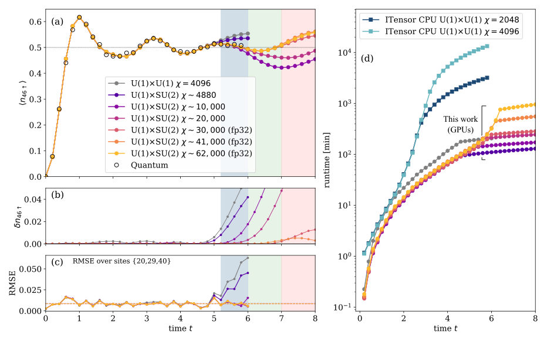
<figcaption class="paper-figure-caption"><b>Fig 1.</b> Figure 1: Main results. (a) TDVP time evolution of ⟨n46↑⟩up to t = 8 for L = 60 fermions with ϵtol = 10−4. Our U(1)×U(1) curve at χ = 4096 reproduces the Q-CTRL iTensor calculation and confirms non-convergence beyond t ≈5. Our U(1)×SU(2) TDVP with χ ≈30,000 achieves convergence in t ∈[5.2, 6] (shaded blue) and our results are reliable in t ∈[6, 7] (shaded green), extending beyond the quantum simulation window. (b) Absolute deviation of ⟨n46↑⟩from the χ ≈62,000 reference at each bond dimension. (c) RMSE of our TDVP data against Q-CTRL’s published values of ⟨n20↑⟩, ⟨n29↑⟩, and ⟨n40↑⟩. (d) Wall-clock runtimes: ITensor TDVP on CPU cluster (1) vs. our GPU implementation (same legend as (a)).</figcaption>
</figure>
<figure class="paper-figure-card">
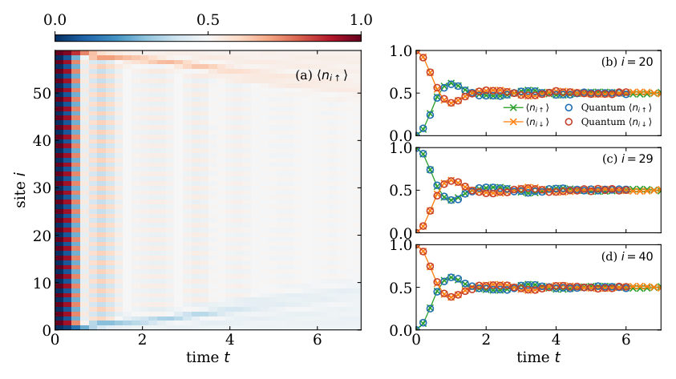
<figcaption class="paper-figure-caption"><b>Fig 2.</b> Figure 2: Classical benchmarks for the Q-CTRL quantum simulation results of Fig. 3 in Ref. (1). (a) Expectation value ⟨ni↑⟩(up-spin density at site i) as a function of evolution time t, computed with our U(1) × SU(2) TDVP at χ ≈62,000 (float32, ϵtol = 10−4). Results already converged for t ≤6 using χ = 30, 000 (Fig S5). (b)–(d) Site-resolved values at i = 20, 29, 40 compared directly with the Q-CTRL quantum simulation results.</figcaption>
</figure>
</div>

<p><strong>Summary.</strong> This paper pushes the classical simulation frontier for the 1D Fermi-Hubbard model by implementing a highly optimized, GPU-accelerated TDVP algorithm that exploits the full U(1)xSU(2) symmetry. The authors successfully certify the dynamics in previously inaccessible, high-entanglement regimes and extend the simulation time beyond current quantum hardware limits. This work significantly narrows the quantum-classical performance gap, establishing a new standard for benchmarking large-scale quantum simulations.</p>
<p><strong>Why it may be interesting.</strong> This work directly addresses the computational boundary between quantum and classical simulation for strongly correlated systems, providing a crucial, highly optimized classical benchmark that forces a re-evaluation of quantum advantage claims in condensed matter physics.</p>
<details>
<summary>Detailed structure</summary>
<p><strong>Main problem.</strong> To rigorously establish the true quantum-classical performance gap for simulating quench dynamics in the 1D Fermi-Hubbard model, especially in highly entangled regimes.</p>
<p><strong>Main result.</strong> The authors significantly advance classical simulation by exploiting full U(1)xSU(2) symmetry and GPU acceleration, narrowing the claimed quantum advantage from 3000x to ~36x and certifying dynamics up to t=7.</p>
<p><strong>Method.</strong> Time-Dependent Variational Principle (TDVP) implemented using Matrix Product States (MPS) and heavily optimized with GPU-accelerated tensor contractions and symmetry exploitation.</p>
<p><strong>Model / system.</strong> The one-dimensional Fermi-Hubbard model (FHM) is studied under quench dynamics from a half-filled Néel state. The Hamiltonian is $H = -t \sum_{\langle i,j
angle,\sigma} (c^\dagger_{i\sigma}c_{j\sigma} + h.c.) + U \sum_i n_{i\uparrow}n_{i\downarrow}$.</p>
<p><strong>Key observables.</strong> Site-resolved spin-up occupations $\langle n_{i\uparrow} 
angle$, Root-Mean-Square Error (RMSE) relative to quantum simulations, and the evolution of the bond dimension $\chi(t)$.</p>
<p><strong>Important parameters / regimes.</strong> System size $L=60$, high-entanglement window $t \in[5.2, 6]$, and bond dimensions reaching $\chi \approx 62,000$.</p>
<p><strong>Assumptions / limitations.</strong> The primary approximation is the use of the MPS ansatz within the TDVP framework. The authors assume that the full U(1)xSU(2) symmetry can be fully exploited for computational efficiency.</p>
<p><strong>Figures summary.</strong> Figures illustrate the convergence of observables (e.g., $\langle n_{46\uparrow} 
angle$) across time, comparing results from insufficient symmetry ($U(1)	imes U(1)$) versus the full symmetry ($U(1)	imes SU(2)$). Runtime comparisons quantify the speedup achieved by the GPU implementation.</p>
<p><strong>Paper structure.</strong> The paper first establishes the physical problem and the limitations of previous quantum claims. It then details the advanced classical methodology, focusing on symmetry exploitation and GPU optimization. The core results demonstrate convergence across the high-entanglement regime and extend the simulation time beyond current quantum hardware capabilities.</p>
</details>
<details>
<summary>Abstract</summary>
<p>Establishing quantum advantage requires comparison against the best achievable classical simulation. The Q-CTRL team recently simulated quench dynamics of the one-dimensional Fermi-Hubbard model on an IBM processor, completing a $L=60$ evolution to time $t=6$ in under three minutes and claiming a $3000\times$ speedup over classical Time-Dependent Variational Principle (TDVP) simulation at bond dimension $χ=4096$. Their classical benchmark required over 160 hours on a CPU cluster, failed to converge in the high-entanglement regime $t\in[5.2,6]$, and left the most challenging window of the experiment unverified. Here, we push the boundaries of classical simulation by exploiting the full $\mathrm{U}(1)\times\mathrm{SU}(2)$ symmetry of the Fermi-Hubbard Hamiltonian combined with GPU-accelerated tensor contractions. Reaching bond dimensions up to $χ\approx62{,}000$ on four NVIDIA H200 GPUs -- among the largest ever achieved in TDVP simulations and fifteen times larger than Q-CTRL's classical baseline -- we achieve fully converged results across the entire simulation window, including rigorous certification of the previously unresolved high-entanglement regime $t\in[5.2,6]$. We further advance the classical frontier to $t=7$, which lies beyond the quantum hardware experiment and any previously verified classical evolution of the full wavefunction. At the bond dimension comparable to Q-CTRL's best classical run, our GPU implementation completes in $\sim\!100$ minutes, directly reducing the claimed $3000\times$ quantum advantage to $\sim\!36\times$. These results substantially narrow the quantum-classical performance gap and establish a new standard for tensor-network benchmarking of large-scale quantum simulations.</p>
</details>
<p><sub><a href="#top">↑ back to top</a></sub></p>

<p><a id="paper-2606.05164"></a></p>
<h3 id="floquet-engineered-parity-anomaly-staircase-in-a-cold-atom-dirac-lattice"><a href="http://arxiv.org/abs/2606.05164v1">Floquet-Engineered Parity Anomaly Staircase in a Cold Atom Dirac Lattice</a></h3>
<p><strong>Authors:</strong> Binayyak Roy, Vito Scarola, Sumanta Tewari<br>
<strong>Type:</strong> both · <strong>Category:</strong> other · <strong>PDF:</strong> <a href="https://arxiv.org/pdf/2606.05164v1">https://arxiv.org/pdf/2606.05164v1</a><br>
<strong>Analysis basis:</strong> full PDF text, analyzed in chunks
<strong>Topic relevance:</strong> 🔥 <code>analog quantum simulation</code> <strong>4/5</strong> · <code>non-equilibrium dynamics</code> <strong>3/5</strong> · <code>driven-dissipative phase transition</code> <strong>1/5</strong> · <code>methods for driven-dissipative</code> <strong>1/5</strong> · <code>non-equilibrium universality</code> <strong>1/5</strong></p>
<div class="figure-strip-hint">↔ Scroll figures horizontally</div>
<div class="paper-figures-scroll">
<figure class="paper-figure-card">
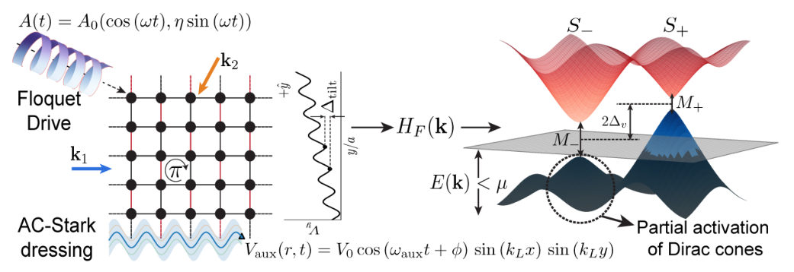
<figcaption class="paper-figure-caption"><b>Fig 1.</b> Figure 1. Schematic of the proposed Floquet-engineered π-flux optical lattice and the resulting Dirac sector activation mechanism. A static tilt suppresses bare tunnelling along the ˆy direction, while Raman-assisted tunnelling restores resonant hopping with controlled Peierls phases such that the accumulated phase around a plaquette is π. The blue and yellow arrows indicate the Raman beams with wave vectors k1 and k2. Floquet drive A(t) = A0(cos ωt, η sin ωt), shown by the helical driving field, generates a time reversal symmetry breaking Dirac mass. An additional auxiliary scalar AC-Stark dressing channel, Vaux(r, t), shown by the wavy modulation field, produces a momentum dependent...</figcaption>
</figure>
<figure class="paper-figure-card">
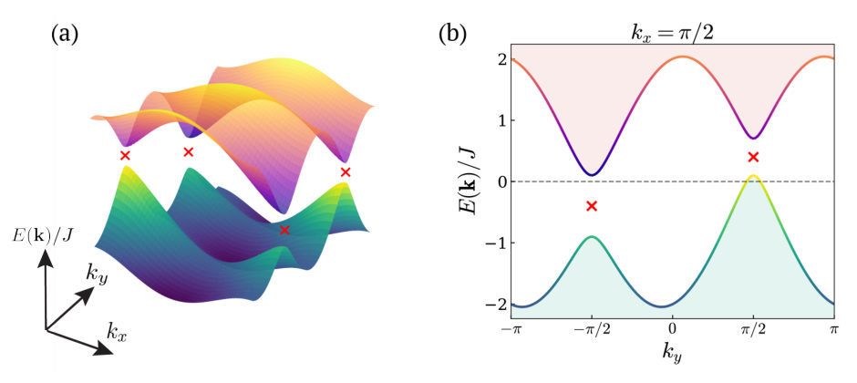
<figcaption class="paper-figure-caption"><b>Fig 2.</b> Figure 2. Energy spectrum of the effective π-flux lattice model. (a) Three dimensional band structure showing the massive Dirac cones, marked by red crosses, after the inclusion of the mass and scalar shift terms. (b) One dimensional cut of the spectrum at kx = π/2 as a function of ky, illustrating the gap opening and relative vertical displacement of the Dirac sectors.</figcaption>
</figure>
<figure class="paper-figure-card">
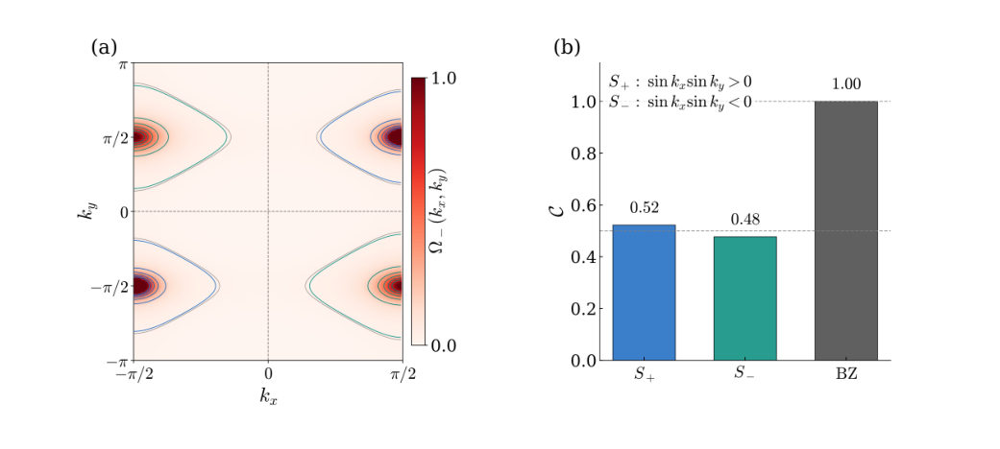
<figcaption class="paper-figure-caption"><b>Fig 3.</b> Figure 3. Berry curvature and sector resolved Berry curvature integrals of the effective two-band model.(a) Berry curvature Ω−(k) of the lower band, with contours highlighting the localization of the curvature near the gapped Dirac cones. The signs of the peaks distinguish cones with different mass-chirality products, while the peak widths are controlled by the corresponding effective Dirac masses M±. (b) Sector resolved Berry curvature integral C obtained by integrating Ω−(k) over the corresponding Dirac sectors. The sector integrals show the half-integer Dirac contributions associated with the massive cones.</figcaption>
</figure>
<figure class="paper-figure-card">
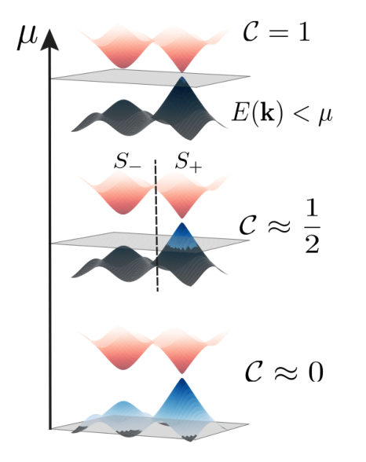
<figcaption class="paper-figure-caption"><b>Fig 4.</b> Figure 4. Schematic of the chemical potential-induced Hall staircase. The massive Dirac sectors S+ and S−are shifted in opposite energy directions by the scalar term ∆v sin kx sin ky, while the mass parameters mT and mI open sector-dependent gaps. Each sector is represented by one effective massive Dirac cone; half-cone pieces appearing at the Brillouin-zone boundary are identified by periodic boundary conditions as a single effective Dirac contribution. The gray plane denotes the chemical potential µ. As µ is swept through the shifted spectrum, the occupied Berry curvature contribution changes from C ≃0 to an intermediate response near C ≃1/2, and then to the next plateau near C ≃1.</figcaption>
</figure>
<figure class="paper-figure-card">
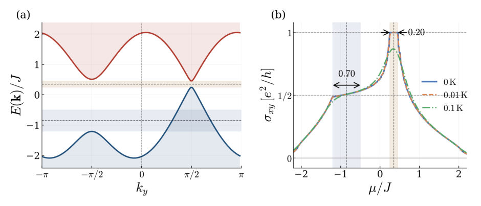
<figcaption class="paper-figure-caption"><b>Fig 5.</b> Figure 5. Chemical potential-induced anomalous Hall staircase. (a) One dimensional cut of the energy spectrum at kx = π/2, with shaded regions indicating the chemical potential windows associated with the Hall plateaus. The blue region, centered near E(k)/J = −0.8, corresponds to occupation of one effective Dirac sector contribution and gives σxy ≃e2/2h. The yellow region, centered near E(k)/J = 0.3, corresponds to occupation of both relevant Dirac sector contributions and gives σxy ≃e2/h. (b) Anomalous Hall response σxy as a function of µ, showing plateau-like regions generated by the sequential activation of Berry curvature contributions from the shifted massive Dirac sectors. The...</figcaption>
</figure>
</div>

<p><strong>Summary.</strong> This paper proposes using cold atoms in an optical lattice to engineer a system exhibiting a parity anomaly-inspired anomalous Hall staircase. By combining Floquet driving and auxiliary dressing, the authors create a model where the Hall response can be tuned stepwise by selectively populating different massive Dirac sectors. This offers a powerful, tunable platform for studying topological physics.</p>
<p><strong>Why it may be interesting.</strong> This work provides a concrete, experimentally accessible platform (cold atoms) to realize and tune topological phenomena like the anomalous Hall effect, which is highly relevant for quantum simulation and topological quantum computing.</p>
<details>
<summary>Detailed structure</summary>
<p><strong>Main problem.</strong> The paper aims to engineer a system to selectively probe the Berry curvature contribution from individual massive Dirac sectors, leading to a quantized anomalous Hall response staircase.</p>
<p><strong>Main result.</strong> The anomalous Hall response exhibits plateau-like steps near $0$, $e^2/2h$, and $e^2/h$, corresponding to the sequential activation of zero, one, or two effective massive Dirac sectors.</p>
<p><strong>Method.</strong> The analysis involves calculating the full lattice Berry curvature integral and analyzing the Hall response ($\sigma_{xy}$) under two protocols: sweeping the chemical potential ($\mu$) or sweeping the scalar displacement term ($\Delta v$).</p>
<p><strong>Model / system.</strong> The system is a cold atom realization in a two-dimensional $\pi$-flux optical lattice. The effective Hamiltonian incorporates time-reversal symmetry breaking (Floquet mass $m_T$), static inversion breaking ($m_I$), and a tunable momentum-dependent scalar displacement ($\Delta v$) via auxiliary AC-Stark dressing.</p>
<p><strong>Key observables.</strong> Anomalous Hall response ($\sigma_{xy}$), which shows staircase plateaus at quantized values ($0, e^2/2h, e^2/h$).</p>
<p><strong>Important parameters / regimes.</strong> Floquet drive amplitude ($m_T$), static offset ($m_I$), scalar displacement ($\Delta v$), and chemical potential ($\mu$).</p>
<p><strong>Assumptions / limitations.</strong> The scalar displacement term ($\Delta v$) is assumed to shift energies without altering the Bloch eigenvectors, allowing for selective occupation of Berry curvature contributions.</p>
<p><strong>Figures summary.</strong> Figures illustrate the energy spectrum, the sector-resolved Berry curvature, and the resulting $\sigma_{xy}$ vs. $\mu$ or $\sigma_{xy}$ vs. $\Delta v$ plots, clearly showing the characteristic staircase plateaus.</p>
<p><strong>Paper structure.</strong> The paper first derives the effective Hamiltonian using Floquet engineering techniques. It then analyzes the low-energy Dirac theory, showing how the scalar term separates the sectors. Finally, it calculates the Hall response by sweeping $\mu$ or $\Delta v$ to demonstrate the stepwise quantization.</p>
</details>
<details>
<summary>Abstract</summary>
<p>We propose a Floquet-engineered cold atom realization of a parity anomaly inspired anomalous Hall staircase in a two dimensional $π$-flux lattice. The effective model hosts massive Dirac fermions generated by the combined action of a time reversal symmetry breaking Floquet mass and a static inversion breaking mass offset. An additional momentum dependent scalar displacement term shifts different Dirac sectors in opposite energy directions without modifying their Bloch eigenvectors. As a result, the Berry curvature contribution associated with individual massive Dirac sectors can be selectively occupied, allowing the anomalous Hall response to evolve stepwise as a function of chemical potential or scalar displacement term. Evaluating the full lattice Berry curvature integral, we find plateau-like responses near $0$, $e^2/2h$, and $e^2/h$, corresponding respectively to the activation of zero, one, and two effective massive Dirac sector contributions. We analyze the associated low energy Dirac theory, band topology, Berry curvature structure, and two parameter response maps, and discuss a possible realization using Raman-assisted tunneling, off-resonant Floquet driving, and auxiliary AC-Stark dressing in ultracold atomic optical lattices.</p>
</details>
<p><sub><a href="#top">↑ back to top</a></sub></p>

<p><a id="paper-2606.04947"></a></p>
<h3 id="phase-correlation-free-quantum-key-distribution-source-operating-at-gigahertz-rates"><a href="http://arxiv.org/abs/2606.04947v1">Phase-correlation-free quantum key distribution source operating at gigahertz rates</a></h3>
<p><strong>Authors:</strong> Shashank Kumar, Alessandro Marcomini, Loïc Millet, Towsif Taher, Aurélien Cavalié, Raphael Houlmann, David Cabrerizo, Gianluca Boso, Marcos Curty, Rob Thew, Boris Korzh<br>
<strong>Type:</strong> experiment · <strong>Category:</strong> quantum information and computing · <strong>PDF:</strong> <a href="https://arxiv.org/pdf/2606.04947v1">https://arxiv.org/pdf/2606.04947v1</a><br>
<strong>Analysis basis:</strong> full PDF text, analyzed in chunks
<strong>Topic relevance:</strong> 🔥 <code>quantum optics experiment</code> <strong>4/5</strong> · <code>QC/QI experiment</code> <strong>3/5</strong> · <code>interference shaping light</code> <strong>2/5</strong></p>
<div class="figure-strip-hint">↔ Scroll figures horizontally</div>
<div class="paper-figures-scroll">
<figure class="paper-figure-card">
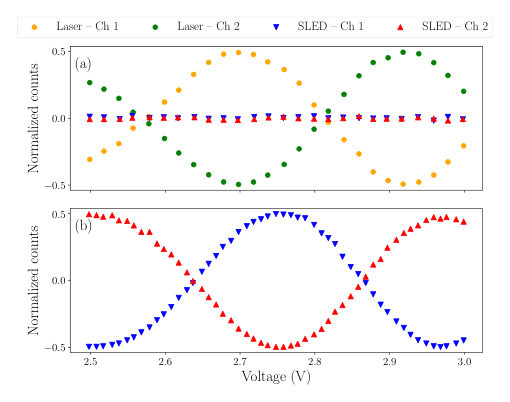
<figcaption class="paper-figure-caption"><b>Fig 1.</b> Figure 2. Visibility comparison for laser and SLED sources. (a) Nearest-neighbour interference (one-DLI configuration), determin- ing the global phase relation of pulses in different rounds of the protocol. (b) X-basis measurement (two-DLI configuration), corre- sponding to a measurement of the coherence among time-bins within the same signal. Counts N are normalized as N/Nmax −(Nmax + Nmin)/2, being Nmax (Nmin) the maximum (minimum) counts of each curve.</figcaption>
</figure>
<figure class="paper-figure-card">
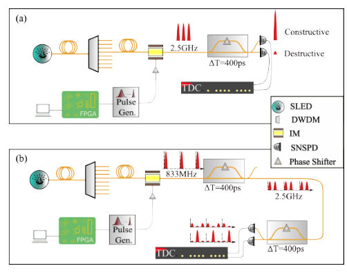
<figcaption class="paper-figure-caption"><b>Fig 2.</b> Figure 1. Experimental setup for phase-correlation measurements. (a) Pulse-carved signals at 2.5 GHz are sent to a matched delay-line interferometer (DLI) to test the phase coherence between neighbor- ing pulses by monitoring for constructive and destructive interference at the outputs. The relative phase is controlled by a voltage bias. (b) Pulses carved at 833 MHz are sent through a first DLI to generate time-bin signals (i.e., early and late time bins with 400 ps separa- tion). A second matched DLI recombines the two bins to measure their relative phase coherence. The outputs are detected using super- conducting nanowire single-photon detectors (SNSPDs) connected to a time-to-digital...</figcaption>
</figure>
<figure class="paper-figure-card">
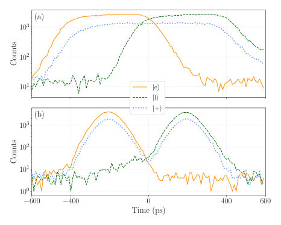
<figcaption class="paper-figure-caption"><b>Fig 3.</b> Figure 3. Time-domain measurement of the prepared states. (a) Profile of the state-encoding IM applied to a continuous-wave sig- nal from the SLED. For Z-basis measurements, one time-bin is fully suppressed (with an extinction ratio exceeding 25 dB), while for the X-basis a balanced superposition of the time-bins is encoded. (b) Fi- nal states obtained by combining the encoder of panel (a) with pulse- carving. The resulting pulses have a full-width half-maximum of about 120 ps.</figcaption>
</figure>
<figure class="paper-figure-card">
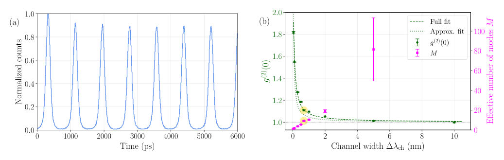
<figcaption class="paper-figure-caption"><b>Fig 4.</b> Figure 4. (a) Photon counts versus time with the HBT experiment for the SLED source filtered through the DWDM channel. The primary peak corresponds to zero-time coincidences, and is purposely delayed to capture the full peak shape. The Nside = 6 secondary peaks occur periodically, in accordance with the source pulsing rate. The g2(0) value is obtained through Eq. 6 considering an integration window of 100 ps. (b) Scaling of g2(0) estimates upon changing the channel bandwidth through the OSA tunable filter, with the corresponding fit given by Eq. 4 with M = γ (approximate fit) and M = M(γ) (Eq. 5, full fit), where γ ∝∆λch. For each measurement, the corresponding effective mode number M is...</figcaption>
</figure>
<figure class="paper-figure-card">
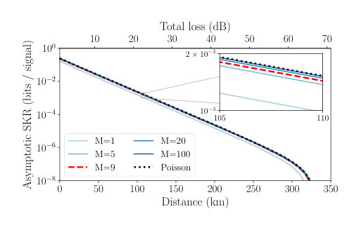
<figcaption class="paper-figure-caption"><b>Fig 5.</b> Figure 5. Asymptotic secret key rate obtainable from a phase- randomized laser source (Poissonian statistics, dotted black line), compared with that of multimodal thermal light characteristic of the SLED for different values of the effective mode number M (solid blue lines). The red dashed line corresponds to the conservative es- timate of M from the experimental data in Fig. 4(b). As M ≫1, the multimode-thermal distribution approaches the Poissonian, and re- sults correctly converge for M = 100.</figcaption>
</figure>
</div>

<p><strong>Summary.</strong> This paper introduces a Super-Luminescent Light Emitting Diode (SLED) as a viable, low-cost source for high-speed Quantum Key Distribution (QKD). It experimentally proves that the SLED inherently randomizes the phase between successive pulses, solving a major security hurdle in QKD. Furthermore, it demonstrates the ability to engineer the necessary intra-signal coherence for time-bin encoding, establishing a scalable platform for next-generation quantum communication.</p>
<p><strong>Why it may be interesting.</strong> This work is highly relevant to quantum optics and open quantum systems as it proposes a practical, solid-state alternative to complex laser systems for quantum communication, directly addressing decoherence and correlation issues in high-speed quantum protocols.</p>
<details>
<summary>Detailed structure</summary>
<p><strong>Main problem.</strong> The primary challenge is developing a secure, high-speed Quantum Key Distribution (QKD) source that avoids phase correlations inherent in conventional laser sources at gigahertz repetition rates.</p>
<p><strong>Main result.</strong> The authors demonstrate that a Super-Luminescent Light Emitting Diode (SLED) can serve as a compact, cost-effective source that achieves intrinsic global phase randomization between adjacent pulses while maintaining high intra-signal coherence necessary for time-bin encoding.</p>
<p><strong>Method.</strong> The work involves characterizing the SLED source using interferometric measurements (1DLI for phase correlation and 2DLI for intra-signal coherence) and simulating the performance using decoy-state BB84 protocols.</p>
<p><strong>Model / system.</strong> The physical platform is a C-band SLED operating at high rates (e.g., 1.25 GHz). The source's spontaneous-emission-driven nature provides intrinsic phase randomization, which is combined with active modulation (pulse carving and basis encoding) to generate time-bin states.</p>
<p><strong>Key observables.</strong> Visibility ($V_{1DLI}$ and $V_{2DLI}$), extinction ratio ($\approx 25$ dB), and the second-order correlation function ($g_2(0)$).</p>
<p><strong>Important parameters / regimes.</strong> Repetition rates up to 1.25 GHz, pulse widths ($\sim 100$ ps), and the effective number of temporal modes ($M$).</p>
<p><strong>Assumptions / limitations.</strong> The security analysis relies on the SLED's ability to mimic the performance of an ideal phase-randomized source, and the performance is compared against theoretical Poissonian limits.</p>
<p><strong>Figures summary.</strong> Figures illustrate the experimental setup for phase correlation measurements (1DLI) and time-bin signal generation (2DLI), comparing visibility results between the SLED and a reference laser source.</p>
<p><strong>Paper structure.</strong> The paper progresses by first establishing the need for phase randomization, then presenting the SLED as a solution, followed by detailed measurements confirming both pulse-to-pulse randomization and intra-signal coherence, and concluding with performance comparisons for QKD.</p>
</details>
<details>
<summary>Abstract</summary>
<p>Phase randomization is essential for the security of practical decoy-state quantum key distribution (QKD) systems. Commonly, implementations rely on laser sources which are either actively phase-randomized, or gain-switched. However, at high repetition rates these show correlations, which can ultimately compromise security and performance. We present a 1.25 GHz phase-randomized QKD source based on a super-luminescent light emitting diode (SLED) operating in the C-band as a compact and cost-effective alternative. The source generates $\sim100$ ps optical pulses with $400$ ps pulse-to-pulse separation, compatible with high-speed time-bin encoding. Interferometric measurements demonstrate $>99\%$ visibility between adjacent time bins, confirming strong first-order coherence within the same quantum signals, while the spontaneous-emission-driven nature of the SLED ensures intrinsic global phase randomization between adjacent signals. This work establishes a scalable SLED-based platform for high-speed prepare-and-measure QKD systems.</p>
</details>
<p><sub><a href="#top">↑ back to top</a></sub></p>

<p><a id="paper-2606.04544"></a></p>
<h3 id="probing-pbte-pb-nanowire-devices-with-radio-frequency-reflectometry"><a href="http://arxiv.org/abs/2606.04544v1">Probing PbTe-Pb nanowire devices with radio-frequency reflectometry</a></h3>
<p><strong>Authors:</strong> Xin-Yi Tang, Lin Li, Zezhou Xia, Jierong Huo, Wenyu Song, Lining Yang, Zonglin Li, Jiaye Xu, Peilin Li, Runan Shang, Qi-Kun Xue, Ke He, Hao Zhang<br>
<strong>Type:</strong> experiment · <strong>Category:</strong> quantum information and computing · <strong>PDF:</strong> <a href="https://arxiv.org/pdf/2606.04544v1">https://arxiv.org/pdf/2606.04544v1</a><br>
<strong>Analysis basis:</strong> full PDF text, analyzed in chunks
<strong>Topic relevance:</strong> 🔥 <code>QC/QI experiment</code> <strong>4/5</strong> · <code>quantum measurements</code> <strong>2/5</strong></p>
<div class="figure-strip-hint">↔ Scroll figures horizontally</div>
<div class="paper-figures-scroll">
<figure class="paper-figure-card">
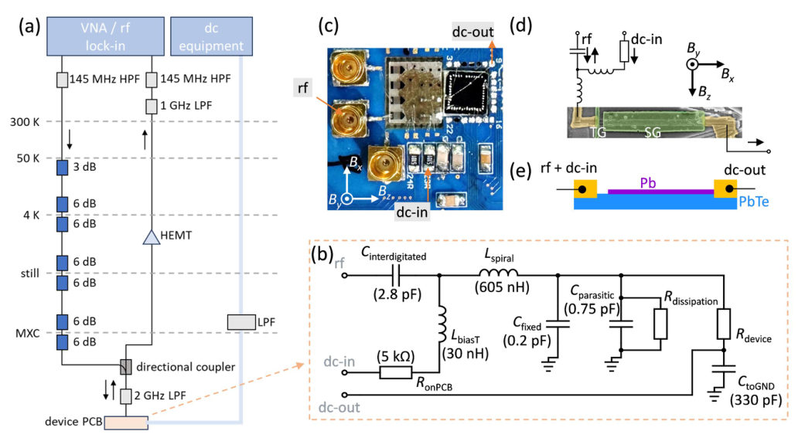
<figcaption class="paper-figure-caption"><b>Fig 1.</b> FIG. 1. rf-readout system for PbTe nanowires. (a) Schematic of fridge wiring. (b) Circuit diagram of the device PCB. The rf signal is injected from the ‘rf’ port. An off-chip bias-tee design enables simultaneous transport measurement through ‘dc-in’ and ‘dc-out’ ports. (c) An optical image of the device PCB, including the device chip (upper right) and a sapphire substrate carrying superconducting spiral inductors and bias-tees (the middle void). (d) False-colored SEM of the PbTe-Pb NS device. TG and SG refer to tunnel gate and super gate, respectively. (e) Simplified schematic of the device and circuit. For clarity, CdTe substrate/capping layer, PbEuTe buffer/spacing layer, gate...</figcaption>
</figure>
<figure class="paper-figure-card">
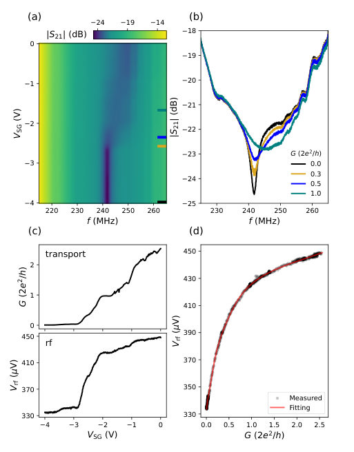
<figcaption class="paper-figure-caption"><b>Fig 2.</b> FIG. 2. Gate-tunable reflectometry. (a) |S21| as a function of VSG and the rf frequency f. (b) Line cuts at several gate voltages (marked in (a)). (c) Transport measurement (upper) and the rf signal (lower). f is fixed at 241.1 MHz. (d) Vrf vs G. The red curve is the fitting.</figcaption>
</figure>
<figure class="paper-figure-card">
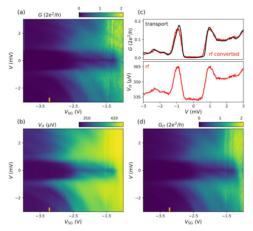
<figcaption class="paper-figure-caption"><b>Fig 3.</b> FIG. 3. Comparison of rf and dc probing of the PbTe-Pb nanowire. (a) dc conductance map as a function of V and VSG. (b) rf measurement under the same gate and bias setting. (c) Line cuts from (a) (upper, black) and (b) (lower) at VSG = −3.22 V (marked as orange bars). The red curve in the upper panel is the rf signal converted into G. (d) Conductance (Grf) map converted from the rf signal in (b).</figcaption>
</figure>
<figure class="paper-figure-card">
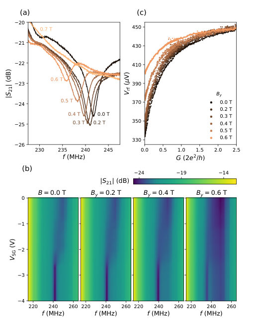
<figcaption class="paper-figure-caption"><b>Fig 4.</b> FIG. 4. Magnetic field compatibility. (a) The resonator re- sponse at different By’s (out-of-plane). VSG is fixed at −4.0 V. (b) The reflectometry signal as a function VSG at By of 0.0, 0.2, 0.4, 0.6 T, respectively. (c) rf signal (Vrf) vs G obtained at different fields.</figcaption>
</figure>
<figure class="paper-figure-card">
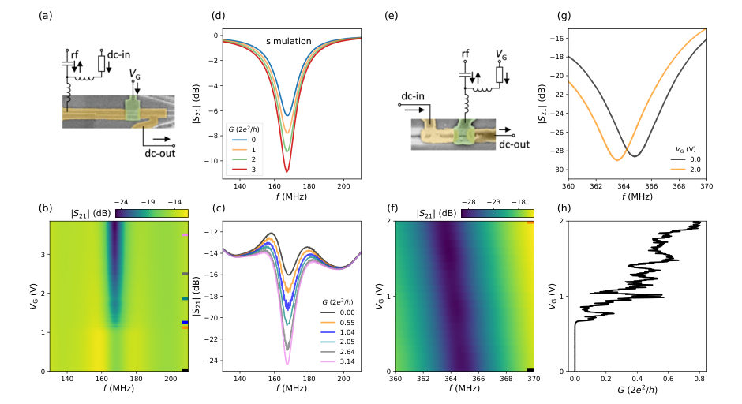
<figcaption class="paper-figure-caption"><b>Fig 5.</b> FIG. 5. Resistive and capacitive sensing of PbTe field effect devices. (a) SEM of a PbTe device using the resistive readout. (b) |S21| as a function of VG and the rf frequency. (c) Line cuts at several gate voltages marked in (b). (d) Simulated cavity response for different device conductance. (e) SEM of a PbTe device using capacitive readout. (f) |S21| as a function of VG and the rf frequency. (g) Two line cuts from (f) at VG = 0 V and 2 V, respectively. (h) Conductance of this device as a function of VG. The magnetic field was set zero during the measurement of both devices.</figcaption>
</figure>
</div>

<p><strong>Summary.</strong> This work demonstrates the feasibility of using radio-frequency (rf) reflectometry to rapidly probe the quantum conductance of PbTe-Pb nanowires designed to host Majorana zero modes. By measuring the reflected rf signal, the authors show a direct, fast correlation between the rf signal and the device's quantum conductance. This technique significantly accelerates characterization compared to traditional DC measurements, paving the way for topological quantum computation.</p>
<p><strong>Why it may be interesting.</strong> The development of fast, high-bandwidth readout techniques like rf reflectometry is crucial for characterizing fragile quantum states, such as those associated with Majorana zero modes, which are central to topological quantum computation.</p>
<details>
<summary>Detailed structure</summary>
<p><strong>Main problem.</strong> The primary goal is to demonstrate a fast, non-invasive readout technique for quantum states in superconducting nanowires predicted to host Majorana zero modes.</p>
<p><strong>Main result.</strong> Radio-frequency (rf) reflectometry proves to be a viable, order-of-magnitude faster method than DC transport for probing the quantum conductance of PbTe-Pb nanowires.</p>
<p><strong>Method.</strong> The technique involves using a Vector Network Analyzer (VNA) to measure the reflection coefficient ($S_{21}$) of the nanowire circuit as a function of gate voltage and frequency.</p>
<p><strong>Model / system.</strong> The experiment uses selective-area-grown PbTe-Pb nanowires on a CdTe substrate, which are engineered to host Majorana zero modes. The circuit is modeled as an LCR network, allowing the rf signal to probe the device's quantum conductance.</p>
<p><strong>Key observables.</strong> The measured observables include the reflection coefficient ($|S_{21}|$) vs. gate voltage and frequency, the device conductance ($G$), and the derived relationship between the rf signal voltage ($V_{rf}$) and $G$.</p>
<p><strong>Important parameters / regimes.</strong> Key parameters include the gate voltage ($V_{SG}$), rf frequency ($f$), and the magnetic field ($B$), which must be compatible with the zero-energy mode signatures.</p>
<p><strong>Assumptions / limitations.</strong> The analysis makes approximations regarding the circuit model, such as neglecting the bias-tee region for resonance analysis, and attributing small resonance dips to parasitic impedance mismatch.</p>
<p><strong>Figures summary.</strong> Figures illustrate the rf-readout schematic, gate-tunable reflectometry results showing $|S_{21}|$ vs $V_{SG}$ and $f$, comparisons between rf and dc probing speeds, and measurements demonstrating compatibility with magnetic fields.</p>
<p><strong>Paper structure.</strong> The paper first introduces the rf-readout system and its compatibility with the nanowire structure. It then presents data showing the gate-tunable response, followed by comparisons to DC measurements and studies of the system's response under applied magnetic fields and capacitive coupling.</p>
</details>
<details>
<summary>Abstract</summary>
<p>We report the implementation of radio-frequency (rf) reflectometry on selective-area-grown PbTe-Pb nanowire devices on a CdTe substrate. These nanowires were predicted to host Majorana zero modes. We demonstrate the compatibility of the rf technique, both resistive and capacitive sensing, with these nanowires. The effect of dielectric loss from the CdTe substrate is also discussed. The feasibility of rf reflectometry is also verified at finite magnetic fields where zero-energy modes occur. Our results enable the fast control of PbTe quantum devices, paving the way for its application in topological quantum computation.</p>
</details>
<p><sub><a href="#top">↑ back to top</a></sub></p>

<p><a id="paper-2606.04086"></a></p>
<h3 id="quantum-string-interactions-revealed-by-full-counting-statistics"><a href="http://arxiv.org/abs/2606.04086v1">Quantum String Interactions Revealed by Full Counting Statistics</a></h3>
<p><strong>Authors:</strong> Chang-Yan Wang, Xue-Feng Zhang<br>
<strong>Type:</strong> theory · <strong>Category:</strong> strongly correlated electrons · <strong>PDF:</strong> <a href="https://arxiv.org/pdf/2606.04086v1">https://arxiv.org/pdf/2606.04086v1</a><br>
<strong>Analysis basis:</strong> full PDF text, analyzed in chunks
<strong>Topic relevance:</strong> 🔥 <code>entanglement &amp; information structure</code> <strong>4/5</strong> · <code>Keldysh / 2PI / non-Gaussian methods</code> <strong>1/5</strong> · <code>analog quantum simulation</code> <strong>1/5</strong></p>
<div class="figure-strip-hint">↔ Scroll figures horizontally</div>
<div class="paper-figures-scroll">
<figure class="paper-figure-card">
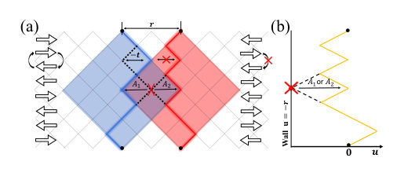
<figcaption class="paper-figure-caption"><b>Fig 1.</b> FIG. 1. Schematic of the hard-core string interaction. (a) Local plaquette flips move two fluctuating strings separated by r, while the hard-core constraint forbids their crossing. The overlap of the blue and red regions marks where the strings can meet and interact. Near contact, the blocked hopping process gives the virtual wall-hopping matrix element, with return channels A1 and A2. Each local segment has two directions, mapped to spin up/down states. (b) In the relative- string coordinate u, the constraint becomes a wall at u = −r. The virtual process connects u = −r and u = −r + 1, so the effective boundary coordinate is centered at u = −r + 1/2.</figcaption>
</figure>
<figure class="paper-figure-card">
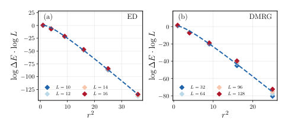
<figcaption class="paper-figure-caption"><b>Fig 2.</b> FIG. 2. Scaling fit of ln ∆E · ln L using ln ∆E · ln L = −a(r − 1/2)2 + b ln r + c. The dashed line is the fit. Panel (a) shows ED data for L = 10, 12, 14, 16, giving a = 4.974 ± 0.068. Panel (b) shows DMRG data for L = 32, 64, 96, 128, giving a = 4.107 ± 0.156.</figcaption>
</figure>
<figure class="paper-figure-card">
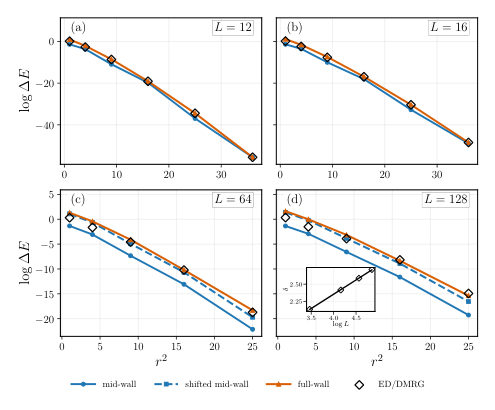
<figcaption class="paper-figure-caption"><b>Fig 3.</b> FIG. 3. Comparison of (a,b) ED and (c,d) DMRG energies with FCS estimates. Solid blue curves are the direct finite-size mid-wall FCS integrals. Dashed blue curves for L = 64, 128 include a fitted vertical shift. Orange curves are the hybrid windowed full-wall estimates, with exact one-cut FCS factors in the central window and Gaussian conditional factors for the remaining wall constraint. The inset shows the fitted shift δ(L) ≃0.417 ln L + 0.687 for L = 32, 64, 96, 128.</figcaption>
</figure>
<figure class="paper-figure-card">
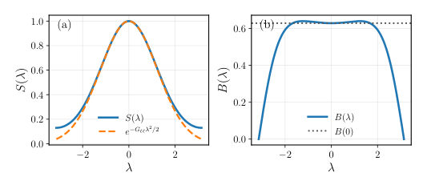
<figcaption class="paper-figure-caption"><b>Fig 4.</b> FIG. 4. Small-λ structure of the mid-wall FCS. (a) Exact F (λ) and the Gaussian approximation e−Gℓℓλ2/2. (b) Exact B(λ) and the dotted line marks B(0) = 2Cℓ,ℓ+1.</figcaption>
</figure>
<figure class="paper-figure-card">
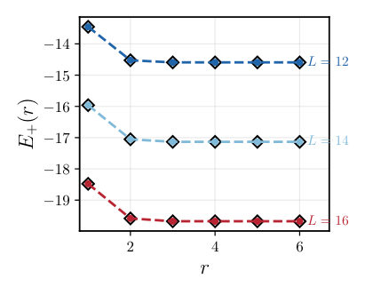
<figcaption class="paper-figure-caption"><b>Fig 5.</b> FIG. 5. Comparison of constrained ground state energies E+(r) from ED and DMRG for L = 12, 14, 16. Black hollow diamonds show ED values obtained from E+(r) = E0 + ∆E(r), while colored dashed lines with solid dots show DMRG energies computed directly from the projected Hamiltonian H+ = PH0P.</figcaption>
</figure>
</div>

<p><strong>Summary.</strong> This work develops a theoretical framework to calculate the effective interaction between quantum strings constrained by hard-core rules. By utilizing Full Counting Statistics (FCS), the authors demonstrate that this interaction is fundamentally controlled by the entanglement entropy ($S_\ell$) of the string itself. This provides a powerful, entanglement-based method for characterizing topological interactions in quantum many-body systems.</p>
<p><strong>Why it may be interesting.</strong> The direct connection established between entanglement entropy ($S_\ell$) and the effective interaction strength ($\Delta E(r)$) provides a powerful, non-local diagnostic tool for understanding topological defects in condensed matter systems.</p>
<details>
<summary>Detailed structure</summary>
<p><strong>Main problem.</strong> The paper addresses the fundamental question of determining the effective interaction potential between quantum strings, particularly when these strings are subject to hard-core constraints that introduce nonlocal interactions.</p>
<p><strong>Main result.</strong> The effective interaction potential is shown to be governed by the Full Counting Statistics (FCS) of the relative string operator, yielding an entanglement-controlled asymptotic form $\ln\Delta E(r) \sim -C r^2/S_\ell$.</p>
<p><strong>Method.</strong> The authors employ the Feshbach–Schur method combined with the formalism of Full Counting Statistics (FCS) to calculate the ground-state energy shift induced by the hard-core constraint.</p>
<p><strong>Model / system.</strong> The model involves two fluctuating hard-core quantum strings on a lattice, constrained by a hard-core rule forbidding crossing. The physics is analyzed using string Hamiltonians and projected operators.</p>
<p><strong>Key observables.</strong> Effective Potential ($\Delta E(r)$), Full Counting Statistics generating function ($\chi(\lambda)$), Entanglement Entropy ($S_\ell$).</p>
<p><strong>Important parameters / regimes.</strong> The separation distance ($r$) between the strings, and the entanglement entropy ($S_\ell$) which sets the leading scale of the repulsion.</p>
<p><strong>Assumptions / limitations.</strong> The analysis often relies on the mid-wall approximation to derive analytic expressions, although the leading asymptotic behavior is shown to be preserved when considering the full-wall constraint.</p>
<p><strong>Figures summary.</strong> Figures compare the calculated effective potential (derived from FCS) against high-precision numerical results from Exact Diagonalization (ED) and DMRG, confirming the predicted quadratic scaling dependence on the separation distance $r$.</p>
<p><strong>Paper structure.</strong> The paper builds the theory by first relating the hard-core constraint to nonlocality, then using the Feshbach–Schur method to derive the effective Hamiltonian, and finally mapping the resulting expectation values onto the framework of Full Counting Statistics to extract the asymptotic potential.</p>
</details>
<details>
<summary>Abstract</summary>
<p>How quantum strings interact is a basic question for extended objects in quantum many-body physics. Even the simplest hard-core constraint (no crossing), can generate a nontrivial effective potential, whose microscopic form is difficult to determine because the relative distance between the strings is intrinsically nonlocal. Here we show that this nonlocality is naturally captured by full counting statistics (FCS). For two hard-core quantum strings, we derive an analytic FCS expression for the emergent interaction by identifying the virtual process in which the two strings touch and hop back. Using the FCS--entanglement relation, we find the effective potential has the entanglement-controlled asymptotic form $\lnΔE(r)\sim -π^2 r^2/(12 S_\ell)$ up to subleading terms, where $S_\ell$ is the entanglement entropy between the two halves of a quantum string. We confirm the theory using high-precision numerical calculations and finite-size FCS estimates. Our results reveal FCS as a direct route to effective interactions between quantum topological line-defects, which may also be extended to higher-form charge.</p>
</details>
<p><sub><a href="#top">↑ back to top</a></sub></p>

<p><a id="paper-2606.04997"></a></p>
<h3 id="a-thorium-229-optical-nuclear-clock-with-feedback-loop"><a href="http://arxiv.org/abs/2606.04997v1">A thorium-229 optical nuclear clock with feedback loop</a></h3>
<p><strong>Authors:</strong> L. Toscani De Col, T. Riebner, I. Morawetz, F. Schneider, N. Sempelmann, J. Schlachet-Lépinay, F. Schaden, M. Bartokos, G. A. Kazakov, K. Beeks, B. Gerstenecker, M. Pimon, S. Lahs, A. Hellerschmied, T. Lercher, J. Premper, A. Niessner, M. Matus, H. Denker, M. Cizek, O. Cip, V. Lal, G. Zitzer, V. Petrov, J. Tiedau, M. V. Okhapkin, E. Peik, T. Schumm<br>
<strong>Type:</strong> experiment · <strong>Category:</strong> other · <strong>PDF:</strong> <a href="https://arxiv.org/pdf/2606.04997v1">https://arxiv.org/pdf/2606.04997v1</a><br>
<strong>Analysis basis:</strong> full PDF text, analyzed in chunks
<strong>Topic relevance:</strong> 🔥 <code>quantum measurements</code> <strong>4/5</strong> · <code>measurement-induced transitions</code> <strong>1/5</strong></p>
<div class="figure-strip-hint">↔ Scroll figures horizontally</div>
<div class="paper-figures-scroll">
<figure class="paper-figure-card">

<figcaption class="paper-figure-caption"><b>Fig 1.</b> FIG. 1. Schematic representation of the setup. a, Thorium-229 nuclear clock located at TU Wien. It is comprised of an ECDL, which serves as a clock laser, stabilized to a high-finesse cavity via the sideband of an EOM, and a seed laser which is frequency-quadrupled, followed by the last SBO-based VUV frequency generation doubling. The seed laser is modulated via the offset lock to generate the error signal from the absorption of the thorium-229 nuclei in the Th:CaF2 crystal, by readout of the PMT. The error signal is used as feedback to the EOM to compensate for the long-term drift of the cavity, closing the nuclear clock feedback loop. b, Frequency comparison to the Yb+ single-ion clock...</figcaption>
</figure>
<figure class="paper-figure-card">

<figcaption class="paper-figure-caption"><b>Fig 2.</b> FIG. 2. Fractional frequency instability. The fractional fre- quency instability for different averaging times τ is shown for two clock operation modes. One mode stabilizes to the 5/2 →3/2 transition with T = 20 s between adjustment steps (red curve), the other with T = 30 min (blue curve). For τ &gt; T, both curves follow the shot noise trend of the 5/2 →3/2 interrogation.</figcaption>
</figure>
<figure class="paper-figure-card">

<figcaption class="paper-figure-caption"><b>Fig 3.</b> FIG. 3. Crystal position dependent center frequency. a, Deviations δfi of the Th-229 line centers from the frequency average of five consecutive measurements at different crystal positions. The second and fourth datasets (blue) were obtained by operating at the same crystal position. Each point is measured in T = 20 s. After ttot = 20 min of data taking, they average down to the respective dotted black lines. b, The table shows the line center deviation δfi for each scanning position. The indicated statistical uncertainties are determined through a Monte Carlo simulation of the clock loop (see Methods). The indicated linewidth at full width half maximum (FWHM) and absorption amplitudes A...</figcaption>
</figure>
<figure class="paper-figure-card">

<figcaption class="paper-figure-caption"><b>Fig 4.</b> FIG. 4. Dark Matter exclusion plots. a, Lomb-Scargle periodogram calculated from the T = 20 s, ttot ≈23 h measurement of the beat frequency of the Th-229 nuclear clock and the Yb+ ion clock. We indicate the detection threshold that was not met at any frequency, as well as the exclusion band. We can exclude with 95% certainty that no oscillations with amplitudes above this value are present. b, Exclusion plot for scalar bosons with a mass mϕ and a coupling to photons with a dimensionless coupling constant de. The shaded areas have been excluded by various clock comparisons [45–50] under the assumption that the scalar boson constitutes the majority of the observed dark matter. Astrophysical...</figcaption>
</figure>
<figure class="paper-figure-card">

<figcaption class="paper-figure-caption"><b>Fig 5.</b> FIG. 5. Calibration and principle of clock operation. a, Absorption measurement of the 5/2 →3/2 nuclear clock transition with an integration time T = 3 s per data point and an off-resonance frequency-offset of +300 kHz, expressed as a function of the offset lock frequency translated into the VUV. This is used to determine the linewidth for the error signal scan. b, Error signal measured with an integration time T = 3 s per data point and a constant frequency modulation of ∆fol = 34 kHz, from which the slope is extracted. c, Illustration of a clock frequency adjustment step determined by the fitted error signal shape.</figcaption>
</figure>
</div>

<p><strong>Summary.</strong> This paper details the implementation and characterization of a highly sensitive optical nuclear clock based on the $  ext{Th-229}$ isotope. By stabilizing the laser to the nuclear transition and comparing it to an atomic clock, the researchers achieved state-of-the-art stability. This precision allows them to place world-leading constraints on variations in fundamental constants and search for signatures of ultralight dark matter.</p>
<p><strong>Why it may be interesting.</strong> This work represents a cutting-edge application of quantum metrology, pushing the limits of precision measurement by moving from electron-based atomic transitions to nuclear transitions, which offers unique sensitivity to fundamental physics.</p>
<details>
<summary>Detailed structure</summary>
<p><strong>Main problem.</strong> To realize and characterize an optical nuclear clock using the Thorium-229 isotope to test fundamental physics principles and search for dark matter signals.</p>
<p><strong>Main result.</strong> The clock achieved a shot-noise limited instability approaching $10^{-15}$ over one day, setting stringent constraints on variations in fundamental constants and dark matter coupling.</p>
<p><strong>Method.</strong> The experiment involves stabilizing a continuous-wave laser to the $    ext{Th-229}$ nuclear transition frequency using rapid feedback based on continuous absorption spectroscopy, comparing it to a reference atomic clock ($ ext{Yb}^+$).</p>
<p><strong>Model / system.</strong> The system utilizes $   ext{Th-229}$ nuclei embedded in a $ ext{CaF}_2$ crystal, interrogating the $148 	ext{ nm}$ nuclear transition. The measurement technique involves sophisticated laser stabilization and frequency comparison against established atomic standards.</p>
<p><strong>Key observables.</strong> Fractional frequency instability ($\sigma_y$), frequency ratio ($ ext{f}<em ext_Yb="ext{Yb">{    ext{Th}}/   ext{f}</em>$), and the amplitude of periodic fluctuations in the beat frequency spectrum.}^+</p>
<p><strong>Important parameters / regimes.</strong> Instability approaching $10^{-15}/\sqrt{	au}/	ext{s}$; search time scales between $20 	ext{ s}$ and $1 	ext{ day}$; constraints on fundamental constants like $\alpha$ and $\Lambda_{QCD}$.</p>
<p><strong>Assumptions / limitations.</strong> The analysis assumes the signal can be modeled by a Lorentzian fit for spectral analysis and relies on Monte Carlo simulations to establish detection thresholds for periodic signals.</p>
<p><strong>Figures summary.</strong> Figures illustrate the experimental setup, including the laser stabilization loop and frequency comparison to the $    ext{Yb}^+$ clock. Other figures show the measured frequency instability ($\sigma_y$ vs $   au$) and exclusion plots for dark matter parameters.</p>
<p><strong>Paper structure.</strong> The paper details the experimental setup and clock stabilization methods, followed by characterization of the clock's stability, and finally applying the high precision to search for variations in fundamental constants and dark matter signals using spectral analysis techniques.</p>
</details>
<details>
<summary>Abstract</summary>
<p>The laser-accessible nuclear transition in the thorium-229 isotope has been identified as a promising candidate for the realization of an optical nuclear clock. Such a nuclear clock might rival or outperform current optical clocks based on electron-shell transitions in atoms or ions, is expected to be more robust against external perturbations, and provides enhanced sensitivity in clock-based tests of fundamental principles of physics. Here, we implement a thorium-229 nuclear clock by stabilizing a continuous-wave laser to the 148 nm nuclear transition with rapid feedback based on continuous absorption spectroscopy. The thorium-229 nuclei are embedded into a millimeter-sized, room temperature calcium fluoride crystal. A subharmonic of the 148 nm radiation is continuously compared to a Yb+ single-ion clock. The nuclear clock shows a simple shot-noise limited scaling of the fractional frequency instability of $3\cdot 10^{-12} \sqrt{τ/\text{s}}$ where $τ$ is the averaging time, approaching $10^{-15}$ instabilities over 1 day of continuous operation. Improvements of the instability by several orders of magnitude can be projected for future solid-state nuclear clocks. We use the nuclear clock to constrain models of ultralight dark matter by searching for periodic fluctuations and slow drifts in the nuclear transition energy, on time scales between 20 s and 1 day. Drawing benefit from the enhanced sensitivity of the thorium-229 transition, these constraints compete with the best atomic clocks concerning dark matter coupling to photons and go beyond previous measurements regarding coupling to the strong force and quarks.</p>
</details>
<p><sub><a href="#top">↑ back to top</a></sub></p>

<p><a id="paper-2606.04629"></a></p>
<h3 id="circuit-level-noise-estimation-via-shuttling-in-plaquette-circuits"><a href="http://arxiv.org/abs/2606.04629v1">Circuit-Level Noise Estimation via Shuttling in Plaquette Circuits</a></h3>
<p><strong>Authors:</strong> Huyen Do, Alexandru Paler<br>
<strong>Type:</strong> experiment · <strong>Category:</strong> quantum information and computing · <strong>PDF:</strong> <a href="https://arxiv.org/pdf/2606.04629v1">https://arxiv.org/pdf/2606.04629v1</a><br>
<strong>Analysis basis:</strong> full PDF text, analyzed in chunks
<strong>Topic relevance:</strong> 🔥 <code>QC/QI experiment</code> <strong>4/5</strong> · <code>quantum measurements</code> <strong>1/5</strong></p>
<div class="figure-strip-hint">↔ Scroll figures horizontally</div>
<div class="paper-figures-scroll">
<figure class="paper-figure-card">

<figcaption class="paper-figure-caption"><b>Fig 1.</b> FIG. 1: A plaquette in a surface code. (a) Mapping of a plaquette onto the lattice of the rotated distance 3 surface code, where yellow vertices are data qubits and red vertices are syndrome qubits. (b) Corresponding plaquette circuit.</figcaption>
</figure>
<figure class="paper-figure-card">

<figcaption class="paper-figure-caption"><b>Fig 2.</b> FIG. 3: RECYCLE strategy. A single syndrome qubit is reused across plaquette repetitions without reset. Examples are shown for n = 2 and n = 3 plaquette repetitions.</figcaption>
</figure>
<figure class="paper-figure-card">

<figcaption class="paper-figure-caption"><b>Fig 3.</b> FIG. 2: FRESH strategy. Each plaquette repetition uses a newly prepared syndrome qubit, so ancilla noise is largely uncorrelated across repetitions. Examples are shown for n = 2 and n = 3 plaquette repetitions.</figcaption>
</figure>
<figure class="paper-figure-card">

<figcaption class="paper-figure-caption"><b>Fig 4.</b> FIG. 4: Experimental errors, including single plaquette errors (plaq), time-like correlated errors between plaquettes (corre), idle errors (idle), and measurement error (mea), propagating on each syndrome qubit for a circuit with n = 3 repetitions of the plaquette in: (a) FRESH experiment ; (b) RECYCLE experiment</figcaption>
</figure>
<figure class="paper-figure-card">

<figcaption class="paper-figure-caption"><b>Fig 5.</b> FIG. 5: Implementation of the CNOT gate using (a) physical-level gates on a general ion-trap machine [33], and (b) IonQ’s native gates.</figcaption>
</figure>
</div>

<p><strong>Summary.</strong> This paper presents a novel method to estimate the circuit-level noise in Quantum Error Correction (QEC) circuits using only single-shot measurements. By comparing 'fresh' versus 'recycled' syndrome qubits on trapped-ion and superconducting hardware, the authors quantify noise accumulation. The results demonstrate the effectiveness of circuit optimization and provide a vital diagnostic for assessing the feasibility of deep QEC circuits on current quantum processors.</p>
<p><strong>Why it may be interesting.</strong> This work provides a crucial, hardware-agnostic diagnostic tool for assessing the viability of large-scale QEC experiments by characterizing circuit-level noise directly from limited measurement data.</p>
<details>
<summary>Detailed structure</summary>
<p><strong>Main problem.</strong> The paper addresses the critical need to estimate Quantum Error Correction (QEC) circuit-level noise rates when only single-shot measurements are available and lower-level hardware calibration is infeasible.</p>
<p><strong>Main result.</strong> The authors successfully estimated plaquette error rates on both trapped-ion (IonQ Aria1) and superconducting (IBM Torino) processors, showing that circuit optimization significantly improves reliability, particularly on shuttling-based architectures.</p>
<p><strong>Method.</strong> They developed an error model comparing 'FRESH' (fresh ancilla per repetition) and 'RECYCLE' (reusing ancilla) syndrome qubit configurations to quantify noise accumulation across multiple plaquette repetitions.</p>
<p><strong>Model / system.</strong> The study focuses on surface-code plaquette circuits, testing the methodology on physical quantum hardware platforms: the IonQ Aria1 trapped-ion device and the IBM Torino superconducting processor.</p>
<p><strong>Key observables.</strong> Effective plaquette error rates ($ ext{plaq}$), time-like correlated error rates ($    ext{corre}$), and the probability of ancilla measurement outcomes being '1' as a function of circuit depth.</p>
<p><strong>Important parameters / regimes.</strong> Plaquette depth (number of repetitions $n$), circuit optimization level (transpiler settings), and the specific syndrome qubit configuration (FRESH vs. RECYCLE).</p>
<p><strong>Assumptions / limitations.</strong> The primary assumption is that the derived error model accurately captures the noise scaling, which is shown to fail on fixed-layout QPUs due to routing overhead.</p>
<p><strong>Figures summary.</strong> Figures illustrate the surface code plaquette structure, the FRESH and RECYCLE strategies, and show polynomial fits of the error probability versus circuit depth for different plaquette designs on the IonQ Aria1 QPU.</p>
<p><strong>Paper structure.</strong> The paper introduces the problem of single-shot noise estimation, details the error model comparing FRESH and RECYCLE strategies, validates the approach by optimizing circuits for native gate sets (IonQ), and compares results across different hardware architectures (IonQ vs. IBM Torino).</p>
</details>
<details>
<summary>Abstract</summary>
<p>We present a method for estimating QEC circuit-level noise levels assuming that only single-shot measurements are available (e.g. measurements are slow and performed in a zoned/parallel fashion), and that lower level quantum hardware calibration is not possible (e.g. cloud access) or not feasible (e.g. large scale computing). We develop and run surface code plaquette experiments using two syndrome qubit configurations: FRESH, involving fresh qubits for each plaquette repetition, and RECYCLE, reusing qubits. To validate our approach, we compile plaquettes to ion-trap (IonQ Aria1) native gate set and apply hardware-aware rewrite templates to reduce circuit depth and execution time. We also run the experiments on a non-shuttling, superconducting processor (IBM Torino). We estimate circuit-level noise rates from the resulting single-shot plaquette measurement statistics, and conclude numerically about the viability of low-depth QEC experiments.</p>
</details>
<p><sub><a href="#top">↑ back to top</a></sub></p>

<p><a id="paper-2606.04795"></a></p>
<h3 id="photoelectron-spectroscopy-with-a-resonant-dichromatic-field-role-of-geometric-phase"><a href="http://arxiv.org/abs/2606.04795v1">Photoelectron spectroscopy with a resonant dichromatic field: Role of geometric phase</a></h3>
<p><strong>Authors:</strong> Evan Munaro-Langloÿs, Axel Stenquist, Jan Marcus Dahlström<br>
<strong>Type:</strong> theory · <strong>Category:</strong> other · <strong>PDF:</strong> <a href="https://arxiv.org/pdf/2606.04795v1">https://arxiv.org/pdf/2606.04795v1</a><br>
<strong>Analysis basis:</strong> full PDF text, analyzed in chunks
<strong>Topic relevance:</strong> 🔥 <code>interference shaping light</code> <strong>4/5</strong> · <code>non-equilibrium dynamics</code> <strong>1/5</strong></p>
<div class="figure-strip-hint">↔ Scroll figures horizontally</div>
<div class="paper-figures-scroll">
<figure class="paper-figure-card">

<figcaption class="paper-figure-caption"><b>Fig 1.</b> FIG. 1. Typical Rabi dynamics triggered by a dichromatic pulse in a two-level atom. The left panel shows a schematic illustration of the dichromatic field setup, where two beams of frequencies ¯ω +∆ω/2 and ¯ω −∆ω/2 are combined to produce a beating field at the mean frequency ¯ω, which drives the transitions in a two-level atom. The two states of the two-level atom are considered to be the 1s and 2p states of hydrogen, therefore fixing ¯ω = 10.2 eV. In both cases considered here, a 25 fs pulse is used with a dichromatic parameter ∆ω = 0.83 eV, chosen such that five full beatings occur during the pulse duration. Panels (a) and (c) show the complex amplitudes and populations, respectively, of...</figcaption>
</figure>
<figure class="paper-figure-card">

<figcaption class="paper-figure-caption"><b>Fig 2.</b> FIG. 2. Photoelectron spectra induced by an auxiliary high-frequecy field, from the ground and excited states. (a) Illustration of the ionisation by the auxiliary field (dashed arrows) from the ground and excited states |a⟩and |b⟩, which are strongly coupled by the dichromatic field (solid arrows). The photoelectron spectrum corresponding to the ground and excited states are presented in panels (b) and (c), respectively. Photoelectron spectra are resolved over the pulse area of each beating. In (b) and (c), normalized line shapes of the photoelectron spectra are shown at some integer multiples of π values of the beating area. Dashed lines represent the effective Rabi frequency, ±Ωeff/2, and...</figcaption>
</figure>
<figure class="paper-figure-card">

<figcaption class="paper-figure-caption"><b>Fig 3.</b> FIG. 3. Photoelectron spectra generated by ionization from the dichromatic field that drives the Rabi dynamics. (a) Schematic illustration of the ionization pathways and corresponding photoelectron signal. Ionization occurs from both the ground and excited states via absorption of two and one photons from the dichromatic field, respectively. (b) Photoelectron spectrum ionized by a one-photon transition from the excited state as a function of the pulse area of each beating. (c) Corresponding photoelectron spectrum from the ground state via two-photon ionization. In (b) and (c), normalized line shapes of the photoelectron spectra are shown at some integer multiples of π values of the beating...</figcaption>
</figure>
</div>

<p><strong>Summary.</strong> This paper explores controlling quantum dynamics in two-level atoms using resonant dichromatic laser pulses. By exploiting the slowly varying beating envelope, the authors demonstrate coherent control over the geometric phase accumulated during Rabi oscillations. This control manifests in unique, predictable features in the photoelectron spectrum, offering a new route for engineering light-matter interactions.</p>
<p><strong>Why it may be interesting.</strong> This work provides a detailed, analytical understanding of how the temporal structure of the driving field (the beating envelope) can be used to engineer specific interference patterns in ultrafast light-matter interactions, which is central to quantum optics and AMO physics.</p>
<details>
<summary>Detailed structure</summary>
<p><strong>Main problem.</strong> The study investigates how geometric phase control can be achieved in two-level atoms driven by near-degenerate dichromatic laser pulses.</p>
<p><strong>Main result.</strong> The beating envelope dynamics lead to spectral structures, such as re-emergent central peaks and higher-order sidebands, which differ qualitatively from standard Autler-Townes splitting.</p>
<p><strong>Method.</strong> The authors analytically derive the essential-state dynamics using an exactly solvable model for flat-top pulses and analyze the resulting photoionization spectra via Fourier analysis.</p>
<p><strong>Model / system.</strong> The system is a two-level atom undergoing Rabi dynamics, driven by a dichromatic field composed of two closely spaced frequencies. The dynamics are tracked using a pseudo-spin vector on the Bloch sphere.</p>
<p><strong>Key observables.</strong> Photoelectron spectra, geometric phase accumulation, and the appearance/disappearance of Autler-Townes doublets and central peaks.</p>
<p><strong>Important parameters / regimes.</strong> The frequency detuning ($\Delta\omega$), the Rabi frequency ($\Omega$), and the beating area (e.g., $\pi$-beating area vs. $2\pi$-beating area).</p>
<p><strong>Assumptions / limitations.</strong> The analysis utilizes an exactly solvable model for flat-top pulse envelopes and relies on time-dependent perturbation theory for ionization amplitudes.</p>
<p><strong>Figures summary.</strong> Figures illustrate Rabi dynamics showing the effect of $\pi$-beating vs. $2\pi$-beating areas, and show photoelectron spectra comparing results from dichromatic pulses versus ordinary Rabi oscillations.</p>
<p><strong>Paper structure.</strong> The paper progresses by establishing the theoretical framework of geometric phase accumulation in the presence of a beating envelope, deriving the time-dependent amplitudes, and finally analyzing the resulting photoionization spectra across different beating areas.</p>
</details>
<details>
<summary>Abstract</summary>
<p>We investigate geometric-phase control in resonantly driven two-level atoms exposed to near-degenerate dichromatic laser pulses. In contrast to conventional two-color schemes based on widely separated frequencies, the closely spaced frequency components generate a slowly varying beating envelope that repeatedly reverses the pseudo-spin rotation on the Bloch sphere. This enables coherent control of the geometric phase accumulated during Rabi dynamics and strongly modifies the resulting photoelectron spectra. Using an exactly solvable model for flat-top pulse envelopes, we derive the essential-state dynamics analytically and analyze photoionization induced both by an auxiliary field and by the dichromatic driving field itself. We show that the formation of Autler--Townes doublets can be interpreted in terms of destructive interference associated with geometric phases acquired during completed pseudo-spin rotations. Beyond the canonical Autler--Townes regime, beat-induced reversal dynamics lead to qualitatively different spectral structures, including re-emergent central peaks and higher-order sidebands. These effects originate from the nonuniform temporal evolution induced by the beating envelope, which modifies the balance between positive and negative excitation amplitudes. Our results establish beating-field control as a route toward engineering geometric-phase interference in ultrafast light--matter interactions and suggest broader applications in coherent control of atoms, molecules, and x-ray-driven systems.</p>
</details>
<p><sub><a href="#top">↑ back to top</a></sub></p>

<p><a id="paper-2606.04969"></a></p>
<h3 id="an-entanglement-measure-from-quantum-optimal-transport"><a href="http://arxiv.org/abs/2606.04969v1">An Entanglement Measure from Quantum Optimal Transport</a></h3>
<p><strong>Authors:</strong> Enmin Shao, Lin Chen, Huixia He<br>
<strong>Type:</strong> theory · <strong>Category:</strong> quantum information and computing · <strong>PDF:</strong> <a href="https://arxiv.org/pdf/2606.04969v1">https://arxiv.org/pdf/2606.04969v1</a><br>
<strong>Analysis basis:</strong> full PDF text, analyzed in chunks
<strong>Topic relevance:</strong> 🔥 <code>entanglement &amp; information structure</code> <strong>4/5</strong></p>
<div class="figure-strip-hint">↔ Scroll figures horizontally</div>
<div class="paper-figures-scroll">
<figure class="paper-figure-card">

<figcaption class="paper-figure-caption"><b>Fig 1.</b> Low-resolution page preview, page 2</figcaption>
</figure>
<figure class="paper-figure-card">

<figcaption class="paper-figure-caption"><b>Fig 2.</b> Low-resolution page preview, page 3</figcaption>
</figure>
<figure class="paper-figure-card">

<figcaption class="paper-figure-caption"><b>Fig 3.</b> Low-resolution page preview, page 4</figcaption>
</figure>
<figure class="paper-figure-card">

<figcaption class="paper-figure-caption"><b>Fig 4.</b> Low-resolution page preview, page 5</figcaption>
</figure>
<figure class="paper-figure-card">

<figcaption class="paper-figure-caption"><b>Fig 5.</b> Low-resolution page preview, page 6</figcaption>
</figure>
</div>

<p><strong>Summary.</strong> This work proposes a novel entanglement measure, $E(
ho)$, defined using the quantum Wasserstein distance between a state and the set of separable states. By leveraging the metric properties of the Wasserstein distance, the authors establish that $E(
ho)$ satisfies all necessary axioms for an entanglement measure. This provides a versatile, geometrically grounded tool for quantifying quantum correlations.</p>
<p><strong>Why it may be interesting.</strong> The geometric approach using optimal transport provides a powerful, mathematically rigorous framework for entanglement quantification, connecting it directly to measurable quantities like entanglement witnesses.</p>
<details>
<summary>Detailed structure</summary>
<p><strong>Main problem.</strong> The paper aims to develop a rigorous, axiom-satisfying measure for quantifying quantum entanglement in bipartite systems.</p>
<p><strong>Main result.</strong> It introduces the entanglement measure $E(
ho)$ based on the quantum Wasserstein distance, which satisfies fundamental axioms and provides quantitative lower bounds related to entanglement witnesses.</p>
<p><strong>Method.</strong> The core method involves defining $E(
ho)$ as the minimal order-1 quantum Wasserstein distance from a state $
ho$ to the set of separable states ($   ext{SEP}$), and utilizing its dual variational formulation.</p>
<p><strong>Model / system.</strong> The analysis is focused on bipartite quantum states $
ho$ acting on a tensor product Hilbert space $\mathcal{H}_A \otimes \mathcal{H}_B$. The measure quantifies the distance from $
ho$ to the set of separable states.</p>
<p><strong>Key observables.</strong> Entanglement measure $E(
ho)$, quantum Wasserstein distance $W_1(
ho, \sigma)$, and entanglement witnesses $W$.</p>
<p><strong>Important parameters / regimes.</strong> The Lipschitz seminorm ($\lVert H 
Vert_{	ext{Lip}}$) and the dimension of the subsystems ($d_A, d_B$).</p>
<p><strong>Assumptions / limitations.</strong> The derivation relies on the data-processing inequality of the Wasserstein metric and the assumption that the infimum/maximum operations can be interchanged.</p>
<p><strong>Paper structure.</strong> The paper establishes the measure via the Wasserstein distance, derives its dual variational form, proves it satisfies key axioms (LOCC monotonicity, etc.), and provides explicit lower bounds for pure and mixed states.</p>
</details>
<details>
<summary>Abstract</summary>
<p>We propose a bipartite entanglement measure $E(ρ)$ defined as the minimal order-1 quantum Wasserstein distance from a state to the set of separable states. Owing to the universal data-processing inequality of the Wasserstein metric, the measure satisfies all fundamental axioms within a single geometric framework. A Lipschitz dual formulation yields explicit lower bounds for pure and mixed states, a sharp constant for two-qubit systems, and an expected value for Haar-random pure states. We further establish a quantitative connection to entanglement witnesses: any negative witness expectation value certifies a lower bound on $E$, and the dual variational bound is exactly the maximal violation achievable by a Lipschitz-1 witness. The approach naturally provides subadditivity, trace-distance estimates, and bounds on local observables, while pointing toward large-deviation conjectures. This work furnishes a versatile paradigm at the interface of entanglement theory, optimal transport, and experimental entanglement detection.</p>
</details>
<p><sub><a href="#top">↑ back to top</a></sub></p>

<p><a id="paper-2606.04470"></a></p>
<h3 id="multi-entropy-in-random-tensor-networks"><a href="http://arxiv.org/abs/2606.04470v1">Multi-entropy in random tensor networks</a></h3>
<p><strong>Authors:</strong> Miao Hu, Simon Lin, Ion Nechita<br>
<strong>Type:</strong> theory · <strong>Category:</strong> quantum information and computing · <strong>PDF:</strong> <a href="https://arxiv.org/pdf/2606.04470v1">https://arxiv.org/pdf/2606.04470v1</a><br>
<strong>Analysis basis:</strong> full PDF text, analyzed in chunks
<strong>Topic relevance:</strong> 🔥 <code>entanglement &amp; information structure</code> <strong>4/5</strong></p>
<div class="figure-strip-hint">↔ Scroll figures horizontally</div>
<div class="paper-figures-scroll">
<figure class="paper-figure-card">

<figcaption class="paper-figure-caption"><b>Fig 1.</b> Figure 1: We tile the hyperbolic disk isometrically using a graph. Each dark blue node represents a random tensor and the connecting edges indicate tensor contractions. The random tensor network defines a state on the Hilbert space supported on the boundary, represented here by dangling legs. (a) The geometric dual of the entanglement entropy: The entropy of region A is proportional to the area of the minimal surface (black dashed) that divides A and its complement ¯A. (b) The proposed geometric dual for the multi-entropy. Here we take q = 3 as an example. The tripartite multi-entropy between region A : B : C is proportional to the area of the minimal multiway cut (also black dashed) that...</figcaption>
</figure>
<figure class="paper-figure-card">

<figcaption class="paper-figure-caption"><b>Fig 2.</b> Figure 2: The diagrammatic notation for the reduced density matrix ρj1···jq i1···iq , and the con-</figcaption>
</figure>
<figure class="paper-figure-card">

<figcaption class="paper-figure-caption"><b>Fig 3.</b> Figure 4: Examples for the minimal energy configuration of (a) R´enyi negativity, and (b) R´enyi reflected entropy in a hyperbolic tensor network. Different domains are represented by different colors.</figcaption>
</figure>
<figure class="paper-figure-card">

<figcaption class="paper-figure-caption"><b>Fig 4.</b> Figure 6: The connected three-terminal tree used in the tree example, followed by its five minimal multiway cut labelings. In panels (b)–(f), the pair records the labels (λ(u), λ(v)) of the two bulk vertices. Note that the three terminals t1, t2, t3 have fixed labels in panels (b)–(f).</figcaption>
</figure>
<figure class="paper-figure-card">

<figcaption class="paper-figure-caption"><b>Fig 5.</b> Figure 7: The symmetric triangle network, followed by representative minimum multiway cut labelings. Panel (b) shows the constant labeling C1, while panel (c) shows the aligned labeling I. The three terminals t1, t2, t3 have fixed labels in the last two panels.</figcaption>
</figure>
</div>

<p><strong>Summary.</strong> This work analyzes multi-partite entanglement in Random Tensor Networks by comparing generalized multi-entropies to minimal multiway cuts. While the conjecture holds for the simplest case (n=2), the authors prove it fails for higher Rényi indices (n&gt;2) by identifying replica-symmetry-breaking saddle points that yield lower energy values. This has significant implications for applying geometric intuition to complex quantum entanglement structures.</p>
<p><strong>Why it may be interesting.</strong> It provides a deep, mathematically rigorous understanding of how entanglement measures (multi-entropies) relate to geometric structures (minimal cuts) in quantum many-body systems, which is crucial for understanding holographic duality.</p>
<details>
<summary>Detailed structure</summary>
<p><strong>Main problem.</strong> The paper investigates the relationship between Rényi multi-entropies in Random Tensor Network (RTN) states and the area of minimal multiway cuts in the large bond-dimension limit.</p>
<p><strong>Main result.</strong> The multi-entropy equals the minimal multiway cut area only for the specific case of the Rényi index n=2; for n&gt;2, the conjecture fails due to the existence of replica-symmetry-breaking saddle points.</p>
<p><strong>Method.</strong> The analysis uses saddle-point approximations derived from minimizing a free energy functional defined over permutations, relating it to geometric minimal cuts.</p>
<p><strong>Model / system.</strong> The model is Random Tensor Networks (RTNs) defined on graphs, which are used to simulate quantum states exhibiting multipartite entanglement, drawing analogies to the Ryu–Takayanagi formula in holography.</p>
<p><strong>Key observables.</strong> Rényi multi-entropies $S^{(q)}_n$, the free energy $F(g)$, and the area of minimal multiway cuts $A(\{\Gamma_k\})$.</p>
<p><strong>Important parameters / regimes.</strong> The Rényi index $n$, the number of parties $q$, and the bond dimension $\chi$ (taken to infinity).</p>
<p><strong>Assumptions / limitations.</strong> The analysis heavily relies on the replica trick and saddle-point approximations, which are shown to break down for $n>2$ due to replica symmetry breaking.</p>
<p><strong>Figures summary.</strong> Figures illustrate the geometric dualities, comparing entanglement entropy to minimal surfaces and proposing a dual relationship between multi-entropy and minimal multiway cuts.</p>
<p><strong>Paper structure.</strong> The paper progresses by first establishing the conjecture for $n=2$ (where it holds), then providing explicit counterexamples for $n>2$ by analyzing the free energy minimization, and finally characterizing the structure of the true minimizers using RSB elements.</p>
</details>
<details>
<summary>Abstract</summary>
<p>We study the evaluation of Rényi multi-entropies $S^{(q)}_n$ in Random Tensor Network (RTN) states in the large bond-dimension limit. For the case of Rényi index $n=2$ and arbitrary number of parties $q$, we prove that that multi-entropies are determined by minimal multiway cuts through the network. When the minimal multiway cut is degenerate, we characterize the full minimizer set via compatible families of minimal cuts and give a criterion for all minimizers to come from ordinary cut partitions. For $n=2$, this gives a natural generalization of the minimal cut description of bipartite entanglement to multipartite systems with arbitrarily many parties. For the case of integer $n>2$, we show that the minimal multiway cut conjecture is in general \emph{not true} by providing explicit counter examples for both the single random tensor and for the network built from isometric tilings. We discuss the implication for our results on the multipartite entanglement structures in RTN and holography.</p>
</details>
<p><sub><a href="#top">↑ back to top</a></sub></p>

<p><a id="paper-2606.04721"></a></p>
<h3 id="quantification-of-entanglement-in-three-qubit-systems"><a href="http://arxiv.org/abs/2606.04721v1">Quantification of Entanglement in Three-Qubit Systems</a></h3>
<p><strong>Authors:</strong> Zikra Aram<br>
<strong>Type:</strong> theory · <strong>Category:</strong> quantum information and computing · <strong>PDF:</strong> <a href="https://arxiv.org/pdf/2606.04721v1">https://arxiv.org/pdf/2606.04721v1</a><br>
<strong>Analysis basis:</strong> full PDF text, analyzed in chunks
<strong>Topic relevance:</strong> 🔥 <code>entanglement &amp; information structure</code> <strong>4/5</strong></p>
<div class="figure-strip-hint">↔ Scroll figures horizontally</div>
<div class="paper-figures-scroll">
<figure class="paper-figure-card">

<figcaption class="paper-figure-caption"><b>Fig 1.</b> FIG. 1. Contour plot showing the variation of the global concurrence E for the symmetric case (λ1 = λ2 = λ3, ϕ = 0). The points on the circumference represent the GHZ- type states, with the point λ0 = λ4 = 1/ √</figcaption>
</figure>
<figure class="paper-figure-card">

<figcaption class="paper-figure-caption"><b>Fig 2.</b> FIG. 2. Behavior of the measure E for Type 2(a) bisep- arable states in the Ac´ın classification under different pa- rameter choices. The measure is non-zero throughout the interior region and vanishes at boundaries corresponding to product states.</figcaption>
</figure>
<figure class="paper-figure-card">

<figcaption class="paper-figure-caption"><b>Fig 3.</b> FIG. 3. Variation of the measure E = 3λ0λ4 as a function of λ0 for Type 2(b) GHZ-type states in the Ac´ın classifi- cation. The maximum occurs at the maximally entangled GHZ state.</figcaption>
</figure>
<figure class="paper-figure-card">

<figcaption class="paper-figure-caption"><b>Fig 4.</b> FIG. 4. Variation of the measure E for Type 3(a) W-type states as a function of λ0 and λ2 in the Ac´ın classifica- tion. In this case λ1 = λ4 = 0 Interestingly the maximum of global concurrence does not occur for the canonical W state, which is indicated by the red point. The maximum occurs for λ0 = q</figcaption>
</figure>
<figure class="paper-figure-card">

<figcaption class="paper-figure-caption"><b>Fig 5.</b> FIG. 5. Comparison of the entanglement-measure E and three-tangle τ for GHZ-class state. For GHZ states, both measures exhibit similar qualitative behavior but differ in normalization and slope.</figcaption>
</figure>
</div>

<p><strong>Summary.</strong> This paper introduces a global concurrence measure to quantify entanglement in three-qubit pure states by summing bipartite entanglement contributions across all possible partitions. Using the Acin canonical form, the authors demonstrate that this measure provides a broader view of total quantum correlations compared to measures sensitive only to genuine tripartite entanglement. It is a theoretical advancement for characterizing multipartite quantum states.</p>
<p><strong>Why it may be interesting.</strong> This work provides a robust, comprehensive tool ($E$) for quantifying total quantum correlations in small quantum systems, which is crucial for understanding resource theories in quantum information processing.</p>
<details>
<summary>Detailed structure</summary>
<p><strong>Main problem.</strong> The study addresses the complex quantification of multipartite entanglement in three-qubit pure states, aiming to overcome the limitations of existing entanglement measures.</p>
<p><strong>Main result.</strong> The proposed global concurrence measure provides complementary insights into multipartite correlations, successfully distinguishing between different entanglement classes (e.g., GHZ vs. W states) where established measures might fail or only detect genuine entanglement.</p>
<p><strong>Method.</strong> The authors employ an analytical approach using the Acin canonical representation and define a global concurrence measure as the sum of generalized concurrences derived from the determinants of reduced density matrices of all three possible bipartitions.</p>
<p><strong>Model / system.</strong> The system under investigation is a three-qubit quantum system, whose pure states are parameterized using the Acin canonical representation, which generalizes the Schmidt decomposition.</p>
<p><strong>Key observables.</strong> Global concurrence ($E$), three-tangle ($  au$), and tripartite negativity ($\mathcal{N}_3$).</p>
<p><strong>Important parameters / regimes.</strong> The state is parameterized by five non-negative amplitudes ($\lambda_i$) and one phase ($\phi$).</p>
<p><strong>Assumptions / limitations.</strong> The analysis assumes that the global concurrence, constructed from bipartite correlations, is a suitable and comprehensive measure for total entanglement in three-qubit systems.</p>
<p><strong>Figures summary.</strong> Figures illustrate the variation of the global concurrence ($E$) across different entanglement classes (Biseparable, GHZ, W) and compare $E$ against $ au$ and $\mathcal{N}_3$ for both GHZ and W states.</p>
<p><strong>Paper structure.</strong> The paper proceeds by first establishing the mathematical framework using the Acin canonical form, deriving the global concurrence measure $E$ from reduced density matrix determinants, and finally comparing $E$'s behavior against established measures like the three-tangle and tripartite negativity across various entanglement classes.</p>
</details>
<details>
<summary>Abstract</summary>
<p>This study presents an analytical investigation of entanglement quantification in three-qubit pure states through the Acín canonical representation, which serves as a generalization of the two-qubit Schmidt decomposition. Driven by the intricacies of multipartite entanglement and the shortcomings of current measures, we employ a global concurrence measure derived from the generalized concurrence of various bipartitions within the system. The characteristics of this measure are explored both analytically and numerically across a range of SLOCC entanglement classes, such as product, biseparable, GHZ-type, and W-type states. When compared to the three-tangle and tripartite negativity, our findings indicate that this measure yields complementary insights into multipartite correlations. The outcomes underscore the significance of this measure in elucidating the structure and distribution of entanglement within three-qubit quantum systems.</p>
</details>
<p><sub><a href="#top">↑ back to top</a></sub></p>

<p><a id="paper-2606.04808"></a></p>
<h3 id="polalrized-reservoirs-in-dynamics-of-polariton-condensation"><a href="http://arxiv.org/abs/2606.04808v1">Polalrized reservoirs in dynamics of polariton condensation</a></h3>
<p><strong>Authors:</strong> I. A. Shelykh, A. V. Yulin<br>
<strong>Type:</strong> theory · <strong>Category:</strong> other · <strong>PDF:</strong> <a href="https://arxiv.org/pdf/2606.04808v1">https://arxiv.org/pdf/2606.04808v1</a><br>
<strong>Analysis basis:</strong> full PDF text, analyzed in chunks
<strong>Topic relevance:</strong> <code>correlated / nonlocal dissipation</code> <strong>3/5</strong> · <code>correlated cavity matter</code> <strong>3/5</strong> · <code>driven-dissipative phase transition</code> <strong>3/5</strong> · <code>exotic spin models in light-matter</code> <strong>3/5</strong> · <code>methods for driven-dissipative</code> <strong>3/5</strong> · <code>non-equilibrium dynamics</code> <strong>3/5</strong> · <code>Keldysh / 2PI / non-Gaussian methods</code> <strong>2/5</strong> · <code>analog quantum simulation</code> <strong>2/5</strong> · <code>non-equilibrium universality</code> <strong>2/5</strong> · <code>Tavis-Cummings &amp; cavity-many-emitter</code> <strong>1/5</strong> · <code>spintronics-quantum-optics interface</code> <strong>1/5</strong></p>
<div class="figure-strip-hint">↔ Scroll figures horizontally</div>
<div class="paper-figures-scroll">
<figure class="paper-figure-card">

<figcaption class="paper-figure-caption"><b>Fig 1.</b> FIG. 1. (a) The dependencies of the Stokes components of the stationary time-independent state on z component of the Stokes vector SP z of the pump. The blue curve corresponds to Sx, red curve - to Sy and orange curve - to Sz component of the Stokes vector of the condensate. The relaxation time .τ∥= 0.1 ps−1. (b) The dependency of the poarization plane angular velocity (psudo-spin precession frequency) as a func- tion of z component of the Stokes vector of the pump. The thicker dark curve is for τ∥= 0.1 ps−1, the thinner green line is for τ∥= 0.01 ps−1. The dashed curve shows the square root fit for the numerically calculated dependency. The threshold value of SP z for τ∥= 0.1 ps−1 is shown...</figcaption>
</figure>
</div>

<p><strong>Summary.</strong> This paper develops a rigorous theoretical framework using the spin density matrix formalism to describe the dynamics of spinor polariton condensates coupled to an excitonic reservoir. It corrects flaws in existing theories concerning polarization invariance and analyzes how the condensate's polarization state evolves under external pumping, showing the critical role of reservoir relaxation times.</p>
<p><strong>Why it may be interesting.</strong> This work is highly relevant to AMO physics and quantum optics as it tackles the complex, non-equilibrium dynamics of interacting quantum matter waves (polaritons) in the presence of dissipation and polarization effects.</p>
<details>
<summary>Detailed structure</summary>
<p><strong>Main problem.</strong> The paper addresses the theoretical description of dynamics in driven-dissipative spinor polariton condensates, specifically focusing on the coupling between the condensate and an incoherent excitonic reservoir.</p>
<p><strong>Main result.</strong> The standard theory fails when the reservoir has non-zero in-plane linear polarization; the correct description requires using the spin density matrix formalism to maintain polarization invariance.</p>
<p><strong>Method.</strong> The authors derive and analyze coupled equations for the condensate and reservoir density matrices using the spin density matrix formalism, transforming between circular and linear polarization bases.</p>
<p><strong>Model / system.</strong> The system involves cavity polaritons, which are modeled as spinor condensates coupled to an incoherent excitonic reservoir. The dynamics are governed by coupled equations derived from a mean-field approach.</p>
<p><strong>Key observables.</strong> Condensate wavefunction ($\Psi$), condensate density matrix ($\hat{
ho}$), reservoir density matrix ($\hat{
ho}_R$), and the Stokes parameters ($S_x, S_y, S_z$) characterizing the condensate polarization.</p>
<p><strong>Important parameters / regimes.</strong> Relaxation time $   au_{\parallel}$, pump polarization components ($S_x, S_y, S_z$), and coupling constants ($g,     ilde{g}, \gamma, \Gamma$).</p>
<p><strong>Assumptions / limitations.</strong> The analysis often neglects spatial effects ($
abla^2\phi$ term) and assumes the coupling is limited to polaritons and incoherent excitons.</p>
<p><strong>Figures summary.</strong> Figures illustrate the stationary state polarization dependence on pump ellipticity ($S_P z$), showing polarization plane rotation above a threshold, and the time evolution of Stokes parameters, which are non-sinusoidal near threshold but approach sinusoidal behavior for large $S_P z$.</p>
<p><strong>Paper structure.</strong> The paper first establishes the theoretical necessity of the spin density matrix formalism due to polarization invariance issues. It then applies this formalism to analyze the polarization dynamics of the condensate under varying pump ellipticity and reservoir relaxation times.</p>
</details>
<details>
<summary>Abstract</summary>
<p>We review the problem of description of the dynamics of driven-disspipative spinor polariton condensates, focusing on the terms corresponding to the coupling between a macroscopic wavefunction of the condensdate and incoherent excitonic reservoir created by a non-resonant pump. We demonstrate that the existing version of the theory breaks down in case, when reservoir has non-zero components of the Stokes vector corresponding to in-plane linear polarization. The polarization invariant theory of reservoir to condensate coupling is formulated with use of the spin density matrix formalism.</p>
</details>
<p><sub><a href="#top">↑ back to top</a></sub></p>

<p><a id="paper-2606.04759"></a></p>
<h3 id="efficient-description-of-parametric-amplification-of-quantum-pulses"><a href="http://arxiv.org/abs/2606.04759v1">Efficient Description of Parametric Amplification of Quantum Pulses</a></h3>
<p><strong>Authors:</strong> Victor Rueskov Christiansen, Klaus Mølmer, Emanuel Hubenschmid<br>
<strong>Type:</strong> theory · <strong>Category:</strong> other · <strong>PDF:</strong> <a href="https://arxiv.org/pdf/2606.04759v1">https://arxiv.org/pdf/2606.04759v1</a><br>
<strong>Analysis basis:</strong> full PDF text, analyzed in chunks
<strong>Topic relevance:</strong> <code>driven-dissipative phase transition</code> <strong>3/5</strong> · <code>methods for driven-dissipative</code> <strong>3/5</strong> · <code>Keldysh / 2PI / non-Gaussian methods</code> <strong>2/5</strong> · <code>entanglement &amp; information structure</code> <strong>2/5</strong> · <code>non-equilibrium dynamics</code> <strong>2/5</strong> · <code>analog quantum simulation</code> <strong>1/5</strong> · <code>correlated / nonlocal dissipation</code> <strong>1/5</strong> · <code>correlated cavity matter</code> <strong>1/5</strong> · <code>interference shaping light</code> <strong>1/5</strong> · <code>non-equilibrium universality</code> <strong>1/5</strong> · <code>quantum measurements</code> <strong>1/5</strong></p>
<div class="figure-strip-hint">↔ Scroll figures horizontally</div>
<div class="paper-figures-scroll">
<figure class="paper-figure-card">

<figcaption class="paper-figure-caption"><b>Fig 1.</b> Figure 1. Schematic depiction of the transformation of quantum states and methods discussed in this article. An input state ˆρu in = f(ˆau, ˆa† u) |0⟩⟨0| [f(ˆau, ˆa† u)]†, generated by applying f to the vacuum, in a single pulsed mode with spectral mode function u(ω) is incident on a nonlinear system offering frequency conversion and parametric amplification. The nonlinear interaction is described by a Hamiltonian, which may be explicitly time-dependent and is quadratic in its creation/annihilation operators. Only two output modes, v1(ω) and v2(ω), will be fed by the input quantum state. The lower panels show an input mode and the corresponding state dependent output modes for an optical...</figcaption>
</figure>
<figure class="paper-figure-card">

<figcaption class="paper-figure-caption"><b>Fig 2.</b> Figure 2. Wigner function of the three example input states, coherent |α⟩, cat (|α⟩+ i |−α⟩)/ √</figcaption>
</figure>
<figure class="paper-figure-card">

<figcaption class="paper-figure-caption"><b>Fig 3.</b> Figure 3. The output quantum state generated from the input of either a single photon state (upper row) or an odd Schrödinger cat state (lower row) residing in the primary mode, v1(ω). The Wigner functions of the input quantum state are shown in the left column, the output quantum state in the primary v1-mode after tracing out the secondary mode in the middle column, and the quantum state of the primary mode after detection of vacuum in the secondary v2-mode in the right column. The Wigner negativity and purity of the primary mode is enhanced after the detection. For the single photon input state, the purity of the output state is increased from γfock ≈0.75 to γfock ≈0.97 under detection of...</figcaption>
</figure>
</div>

<p><strong>Summary.</strong> This paper introduces an efficient analytical method to calculate the output quantum state of parametric amplification when the input is a complex quantum state. By decomposing the input operator relative to the output modes, the authors simplify the calculation significantly. The method is demonstrated using various input states and highlights the utility of quantum state purification through mode heralding.</p>
<p><strong>Why it may be interesting.</strong> This work provides a powerful, computationally efficient analytical tool for analyzing quantum state evolution in parametric processes, which is central to quantum optics and quantum information processing.</p>
<details>
<summary>Detailed structure</summary>
<p><strong>Main problem.</strong> The paper develops an efficient, analytical method to determine the quantum state of output modes following parametric amplification when the input is an arbitrary non-vacuum quantum state.</p>
<p><strong>Main result.</strong> The method successfully calculates output states for various inputs (coherent, cat, single-photon) and demonstrates that vacuum detection in one output mode can significantly purify the state in the other.</p>
<p><strong>Method.</strong> The core method involves applying the amplification transformation to the vacuum state first, and then applying a transformed version of the operator that creates the input state from vacuum, avoiding complex ancillary mode calculations.</p>
<p><strong>Model / system.</strong> The system modeled is bosonic quantum fields (like light in waveguides) undergoing parametric amplification, described by a Hamiltonian quadratic in creation and annihilation operators.</p>
<p><strong>Key observables.</strong> Purity ($\gamma$), Wigner function, covariance matrix ($\sigma$), and the quantum state itself ($\hat{
ho}_{	ext{out}}$).</p>
<p><strong>Important parameters / regimes.</strong> Input state parameters (e.g., $\alpha$ for coherent states), pump strength ($\xi$), and cavity loss rate ($\gamma$).</p>
<p><strong>Assumptions / limitations.</strong> The formalism relies heavily on the quadratic form of the Hamiltonian and the effective treatment of Gaussian states, although it claims generalizability.</p>
<p><strong>Figures summary.</strong> Figures illustrate the schematic transformation process, the Wigner functions of input/output states, and the effect of vacuum detection on state purity.</p>
<p><strong>Paper structure.</strong> The paper builds from the general mathematical formalism for state transformation through parametric amplification, details the single-mode and two-mode operator decompositions, and concludes with specific examples demonstrating state purification via heralding.</p>
</details>
<details>
<summary>Abstract</summary>
<p>A single quantum pulse undergoing parametric amplification feeds into at most two pulses in the output. In this work, we present an efficient, analytical method for finding the quantum state of these output modes. Our method applies the amplification to the vacuum rather than to the input state, and subsequently applies a transformed version of the operator that creates the input state from vacuum. Given the input and output pulse mode functions, the method is analytical, and therefore computationally very efficient, and it can be readily generalized to multiple non-vacuum input modes. We exemplify the method by computing the output quantum states resulting from the input of a coherent, a Schrödinger cat, and a single photon input quantum state. We further employ the method to obtain the quantum state in one of the two output modes heralded upon detection of vacuum in the other, least populated, mode.</p>
</details>
<p><sub><a href="#top">↑ back to top</a></sub></p>
<hr>
<p>
<a href="index.html">← Index</a>
 · <a href="papers_02.html">Next →</a>
</p>
<hr>

</body>
</html>
